GEOTECNIA
para geólogos
Prof. Edier Aristizábal

Presentación del curso
¿Por qué geotecnia para geólogos?
- Toda obra se apoya en, se excava en o se construye con materiales geológicos.
- El ingeniero geotecnista calcula; el geólogo explica el terreno: origen, perfil de meteorización, estructura, agua y procesos activos.
- Los grandes fracasos geotécnicos casi siempre nacen de un modelo geológico equivocado, no de un error de cálculo.
- En los Andes tropicales, los suelos residuales, los macizos fracturados y la lluvia hacen de la geología el factor dominante.
Objetivo del curso
Que el estudiante de Ingeniería Geológica entienda el comportamiento mecánico e hidráulico de suelos y rocas, y sea capaz de traducir una descripción geológica en un modelo geotécnico (parámetros, mecanismos de falla y factores de seguridad) para cimentaciones, taludes, laderas y estructuras de contención.
Contenido
- Introducción a la geotecnia
- Mecánica de suelos
- Mecánica de rocas
- El agua en el suelo y el macizo rocoso
- Estado de esfuerzos
- Esfuerzos efectivos
- Distribución de esfuerzos verticales
- Compactación
- Consolidación y asentamientos
- Cimentaciones
- Resistencia al cortante
- Resistencia de rocas
- Movimientos en masa
- Estabilidad de laderas y taludes
- Empujes de tierras y muros
Evaluación
| Componente | Peso | Momento |
|---|---|---|
| Trabajo 1: perfil de meteorización de una ladera (escrito) | 10 % | Al terminar la teoría de esfuerzos |
| Trabajo 1: presentación | 20 % | |
| Trabajo 2: análisis de estabilidad de la misma ladera (escrito) | 10 % | Al terminar estabilidad de laderas |
| Trabajo 2: presentación | 20 % | |
| Parcial teórico (todo el curso) | 30 % | Al terminar toda la teoría |
| Participación en clase | 10 % | A lo largo del curso |
Trabajos sobre una ladera
- Unidades geológicas y horizontes (Dearman, Deere y Patton)
- Propiedades índice y clasificación
- Condiciones de agua
- Perfil de esfuerzos totales, presión de poros y esfuerzos efectivos
- Modelo geológico-geotécnico
- Escenarios: seco, niveles freáticos, saturación por lluvia
- Escenario sísmico (pseudoestático) y combinado
- Factor de seguridad e interpretación
Cada trabajo: informe escrito (10 %) y presentación ante el grupo (20 %).
Material del curso
Bibliografía básica
- Das, B. M. (2001). Fundamentos de ingeniería geotécnica. Thomson Learning.
- González de Vallejo, L. I. et al. (2002). Ingeniería geológica. Pearson.
- Juárez Badillo, E. y Rico, A. (2005). Mecánica de suelos. Limusa.
- Hoek, E. (2007). Practical rock engineering. RocScience.
- Duncan, J. M. y Wright, S. G. (2005). Soil strength and slope stability. Wiley.
- Proyecto Multinacional Andino, GEMMA (2007). Movimientos en masa en la región andina. Servicio Geológico Colombiano.
1. Introducción a la geotecnia
DEFINICIÓN
Geotecnia: parte de la geología aplicada que estudia la composición y propiedades de la zona más superficial de la corteza terrestre, para el asiento de todo tipo de construcciones y obras públicas. Google (2015)
Ingeniería geotécnica: es la rama de la Ingeniería civil que se encarga del estudio de las propiedades mecánicas, hidráulicas e ingenieriles de los materiales provenientes de la Tierra, aplicadas a las obras de Ingeniería Civil. Los ingenieros geotécnicos investigan el suelo y las rocas por debajo de la superficie para determinar sus propiedades y diseñar las cimentaciones para estructuras tales como edificios, puentes, centrales hidroeléctricas, estabilizar taludes, construir túneles y carreteras, etc. WIKIPEDIA (2015).
Ingeniería geotécnica es la ciencia que explica la mecánica de suelos y rocas y sus aplicaciones en el desarrollo del hombre. Incluye, sin limitarse a, el análisis, diseño y construcción de las fundaciones , taludes, estructuras de contención, diques, carreteras, túneles, diques, muelles, rellenos sanitarios y otros sistemas que se hacen o se apoyan en el suelo o roca. ISSMGE (2015).
La Mecánica de Suelos es la aplicación de las leyes de la mecánica e hidráulica a los problemas de la ingeniería relacionados con los sedimentos y otras acumulaciones no consolidadas de partículas sólidas producidas por la desintegración mecánica y química de las rocas, independientemente de si contienen o no una mezcla de componentes orgánicos. Karl Terzaghi
DEFINICIÓN
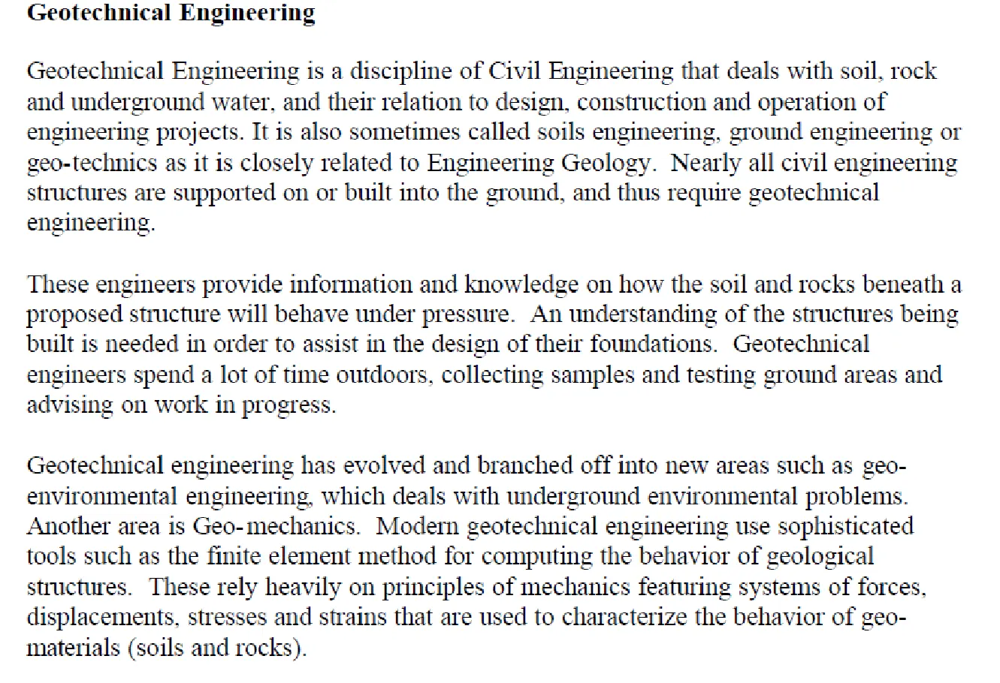
Fuente: ISSMGE (2015)
DEFINICIÓN
«La ingeniería geotécnica es el arte de moldear materiales que no entendemos del todo, en formas que no podemos analizar con precisión, para resistir fuerzas que no podemos evaluar realmente, de tal manera que el público no tenga razones para sospechar el alcance de nuestra ignorancia.»
Autor desconocido
GEOTECNIA

Fuente: Way, 1973
OBRAS TÍPICAS EN GEOTECNIA

HISTORIA
- < 1500 Antigüedad (Pytheos en Grecia, Ingenieros romanos)
- Renacimiento…
- 1500 – 1700 Pre-clásica (Galileo, Hooke, da Vinci, etc)
- Ingenieros militares…
- 1700 – 1900 Clásica (Coulomb, Darcy, Rankine, etc)
- Fallas Canal de Panamá, ferrocarril de Suecia, etc…
- > 1900 Moderna (Terzaghi)
- Pirámides de Egipto (2,700 – 2,500 A.C)
HISTORIA (< 1,500) – Torre de Pisa (1,173 – 1,360)
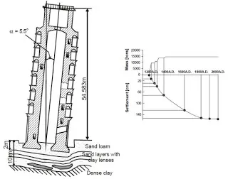

Pre-Clásica (< 1,500)
- Galilelo Galilei (1564 – 1642)
- Robert Hooke(1635 – 1704)
- Leonardo da Vinci (1452 – 1519)
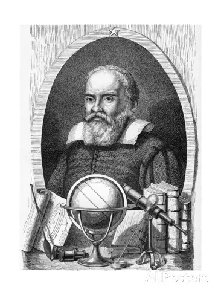
CHARLES AUGUSTIN de COULOMB (1736 – 1806)
La resistencia de los suelos (1773), descubrió que la resistencia a lo largo de una superficie de falla dentro de un suelo es función tanto de la carga por unidad de área como de la superficie de contacto. La resistencia al esfuerzo cortante equivale a la suma de la fricción y la cohesión. La resistencia friccional surge entonces de la irregularidad de los contactos entre partículas, y es proporcional a la fuerza perpendicular entre ellas (presión normal). La cohesión, que es la resistencia máxima a la tensión de un suelo, es resultado de las fuerzas de atracción que hay entre gránulos en contacto íntimo, y no depende de la presión normal.
Teoría de Coulomb para presión de tierras (1776).
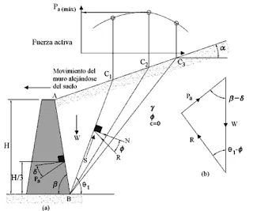
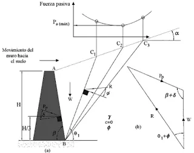
HENRY PHILIBERT GASPARD D´ARCY (1803 – 1858)
1858, estableció la ley fundamental de la hidráulica que rige la filtración de agua a través de los suelos
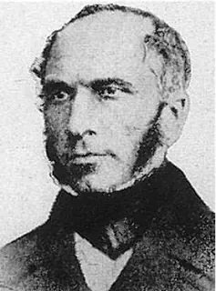
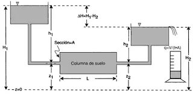
WILLIAM JOHN MACQUORN RANKINE (1820 – 1874)
On the Stability in Loose Earth (1857)
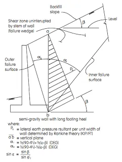
CHRISTIAN OTTO MOHR (1835-1918)
Círculo de Esfuerzos de Mohr (1882). un método gráfico para representar esfuerzos normales y tangenciales actuantes en planos inclinados, cuando el material se somete a esfuerzos biaxiales, de útil aplicación en el campo de los suelos
Combinando la teoría de Coulomb con el estado de esfuerzos biaxial de Christian Otto Mohr, la teoría pasó a conocerse como la teoría de Mohr-Coulomb.
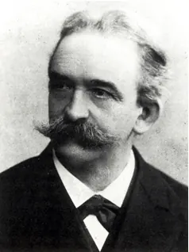
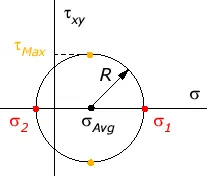
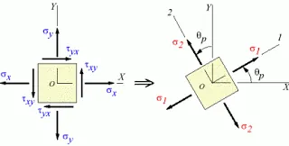
JOSEPH VALENTIN BOUSSINESQ (1842-1929)
Teoría de distribución de esfuerzos y deformaciones por cargas estructurales sobre el terreno (1885)
La solución de Boussinesq determina el incremento de esfuerzos como resultado de la aplicación de una carga puntual sobre la superficie de un semi-espacio infinitamente grande; considerando que el punto en el que se desea hallar los esfuerzos se encuentra en un medio homogéneo, elástico e isotrópico
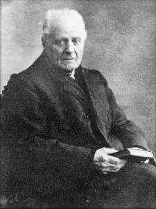
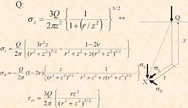
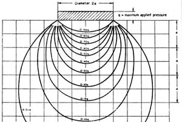
Albert Mauritz Atterberg (1846-1916)
Definió la fracción arcillosa como el porcentaje en peso de las partículas menores de 2 micras de diámetro. Se dio cuenta de la importante función de las partículas de arcilla en los suelos y la plasticidad de los mismos. En 1911, explicó la consistencia de los suelos cohesivos mediante la definición de los límites líquido, plástico, y de contracción
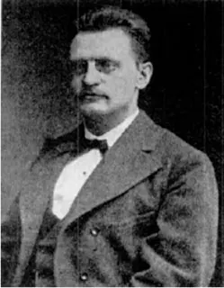
KARL VON TERZAGHI (1883 -1963)
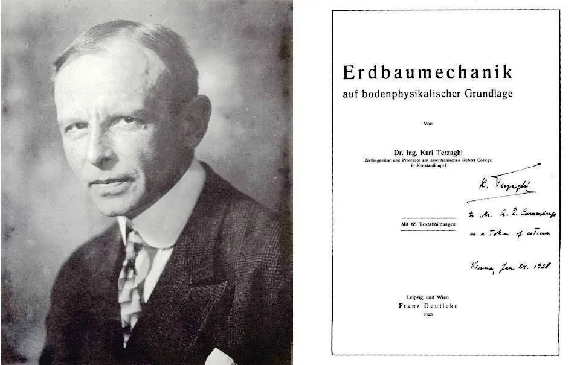
ARTHUR CASAGRANDE (1902-1981)
Sistema unificado de clasificación de suelos (1942)
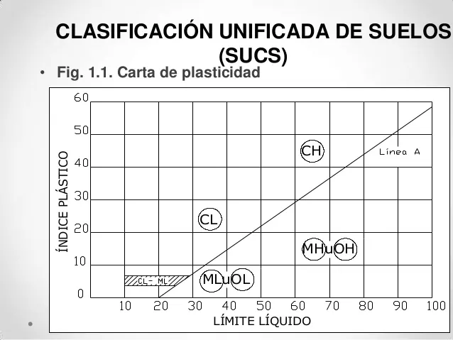
RALPH BRAZELTON PECK (1912 - 2008)
En 1948, junto con Karl Terzaghi, Ralph Peck fue co-autor del libro de texto más influyente en la ingeniería geotécnica, Mecánica de Suelos en la Práctica de la Ingeniería (Soil Mechanics In Engineering Practice). En el año 1953 con Walter E. Hanson y Thomas H. Thornburn, Peck fue co-autor del libro de texto ampliamente utilizado Ingeniería de Fundaciones (Foundation Engineering)
“Padrino de la Mecánica de Suelos”
DELWYN G. FREDLUN (1940-)
Mecánica de suelos parcialmente saturados
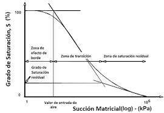
CÓDIGOS DE CONSTRUCCIÓN: TITULO H – NSR-10
Obligatoriedad: los estudios geotécnicos definitivos son obligatorios para todas las edificaciones urbanas y sub urbanas. Y para las edificaciones en terrenos no aptos para el uso urbano de los grupos de uso II (de ocupación especial), III (Edificaciones de atención a la comunidad); y IV (edificaciones indispensables).
Firma de los estudios: director - ingenieros civiles, los estudios – profesionales con experiencia > 5 años bajo la dirección de un profesional facultado o acreditar estudios de posgrado.
Estudio geotécnico preliminar: conjunto de actividades necesarias para aproximarse a las características geotécnicas de un terreno, con el fin de establecer las condiciones que limitan su aprovechamiento, los problemas potenciales que puedan presentarse, los criterios geotécnicos y parámetros generales para la elaboración de un proyecto. No es de presentación obligatoria, pero es recomendable para proyectos especiales o de magnitud considerable. No reemplaza el estudio geotécnico de detalle.
Estudio geotécnico definitivo: trabajo realizado para un proyecto especifico donde se debe precisar las condición físico-mecánicas del subsuelo y as recomendaciones particulares para el diseño y construcción de todas las obras relacionadas, conforme a este Reglamento. Su presentación es obligatoria.
2. Mecánica de suelos
DEFINICIÓN: SUELO
- Edafólogos:
- Material terrestre que ha sido alterado por procesos físicos, químicos y biológicos que permite que halla vida vegetal.
- Ingenieros :
- Material solido terrestre que se puede remover con pala.
- Geólogos
- Combina ambas definiciones
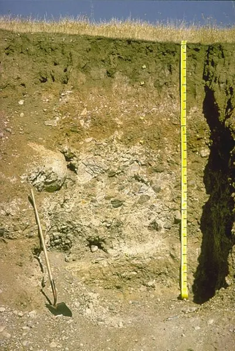
METEORIZACIÓN
- Proceso de alteración y separación de la roca y materiales del suelo sobre y cerca de la superficie terrestre por descomposición química o desintegración física (Anon, 1995).
- Debido ala diferencia de energía de formación y la energía a la cual está expuesta a roca…
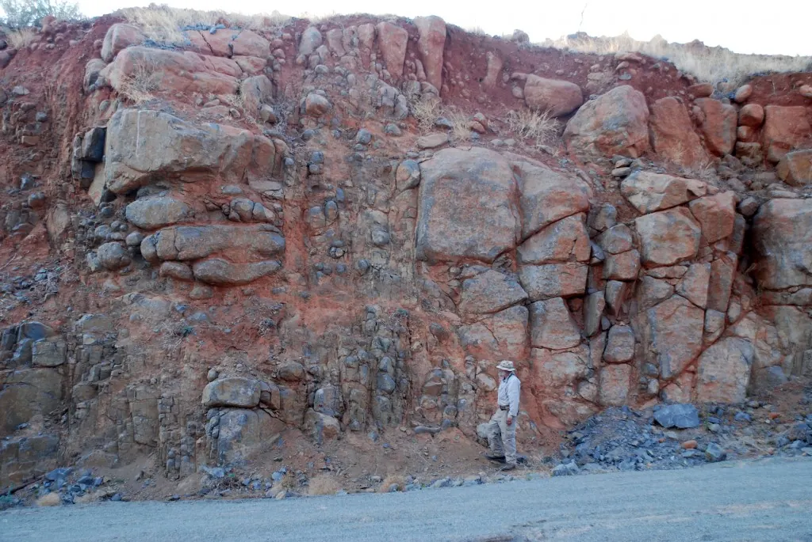
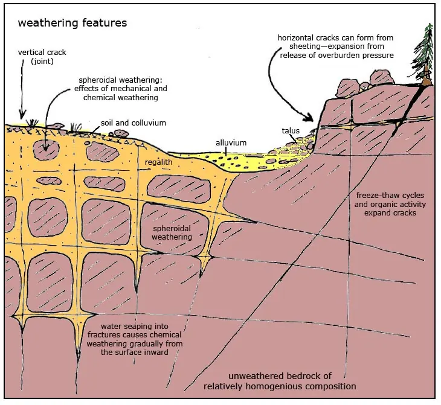
FACTORES DE FORMACIÓN
- Ambiente de meteorización: Clima
- Atmósfera
- Hidrosfera
- Factores locales: topografía, drenaje, etc..
- Litosfera: litología
- Tipo de roca
- Litología
- Estructura
- Enlace mineral
- Biosfera: Flora y fauna
- Tipo de masa vegetal
- Carácter, masa biótica, etc.
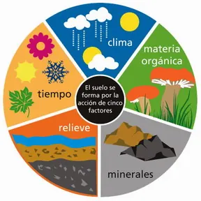
LLUVIA vs METEORIZACIÓN
(- caolinita)
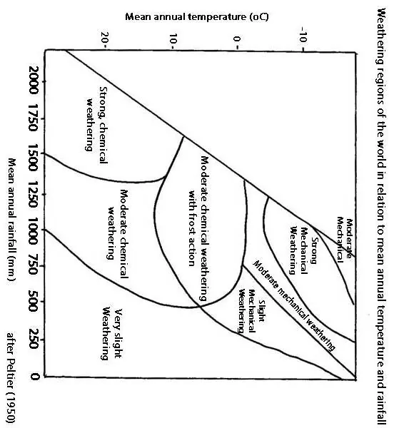
METEORIZACIÓN QUÍMICA
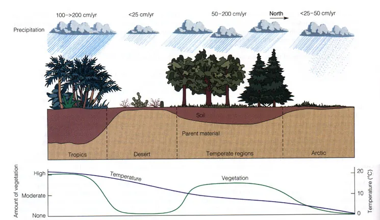
TIPOS DE METEORIZACIÓN
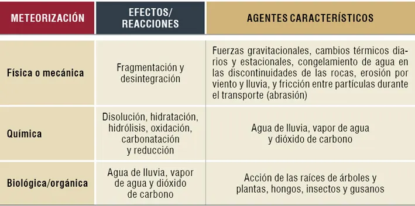
TIPOS DE METEORIZACIÓN
Agudelo (2012)
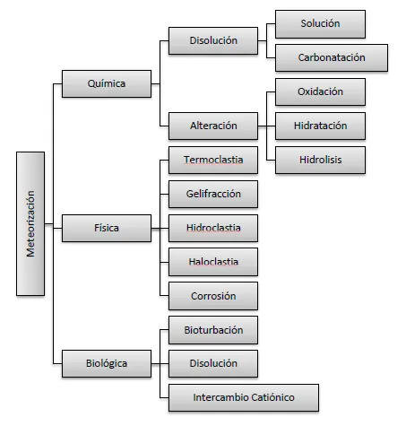
METEORIZACIÓN
- METEORIZACIÓN MECÁNICA
- Desintegración
- METEORIZACIÓN QUÍMICA
- Descomposición
- Formación de suelos o sedimentos. Reduce el tamaño de los materiales
- Altera la composición química y mineralógica de las rocas. Materiales disueltos
- TIPOS DE METEORIZACIÓN
METEORIZACIÓN DE LOS SILICATOS
- Very Mobile
- Immobile
- Fast Weathering
- Slow
- Weathering
- Weathering
- Escala de Goldich

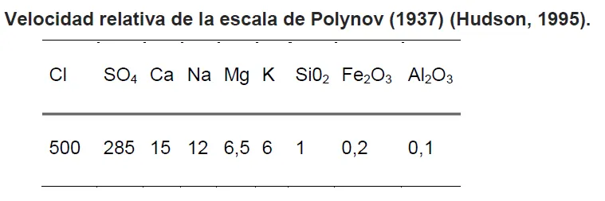
INDICES Y PATRONES DE METEORIZACIÓN
Aristizábal et al, (2005, 2008), Nesbitt & Young (1982, 1984, 1989)
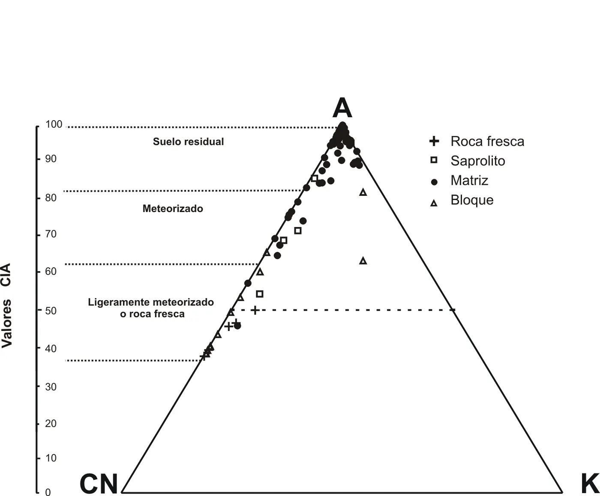
INDICES Y PATRONES DE METEORIZACIÓN
Aristizábal et al, (2005, 2008), Irfan (1999)
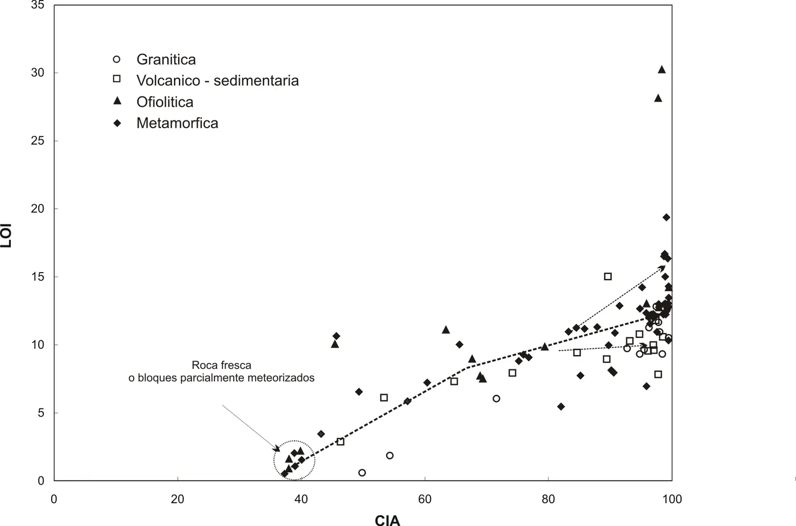
INDICES Y PATRONES DE METEORIZACIÓN
Aristizábal et al, (2005, 2008), Irfan (1996)
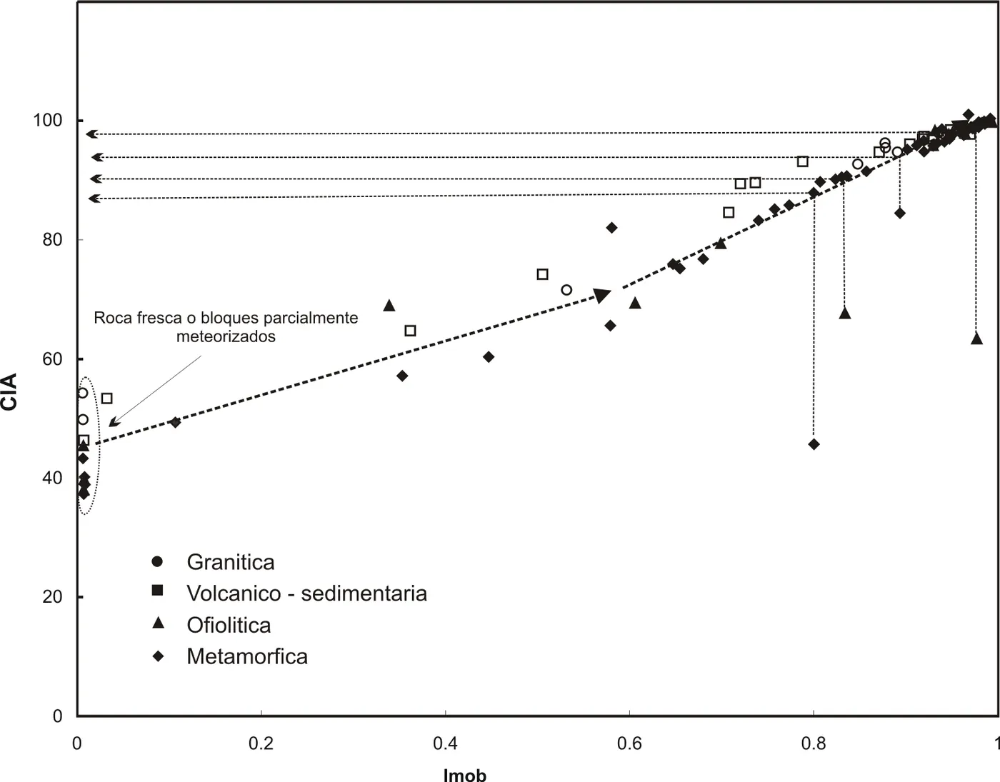
INDICES Y PATRONES DE METEORIZACIÓN
- Aristizábal et al, (2005, 2008), Nesbitt & Young (1982, 1984, 1989)
- Rocas graníticas
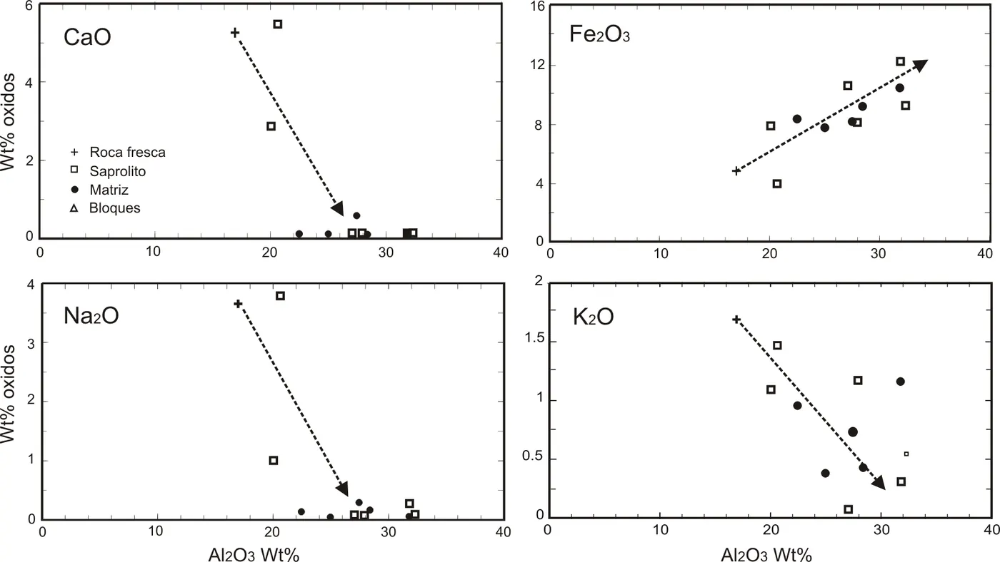
INDICES Y PATRONES DE METEORIZACIÓN
Aristizábal et al, (2005, 2008), Nesbitt & Young (1982, 1984, 1989)
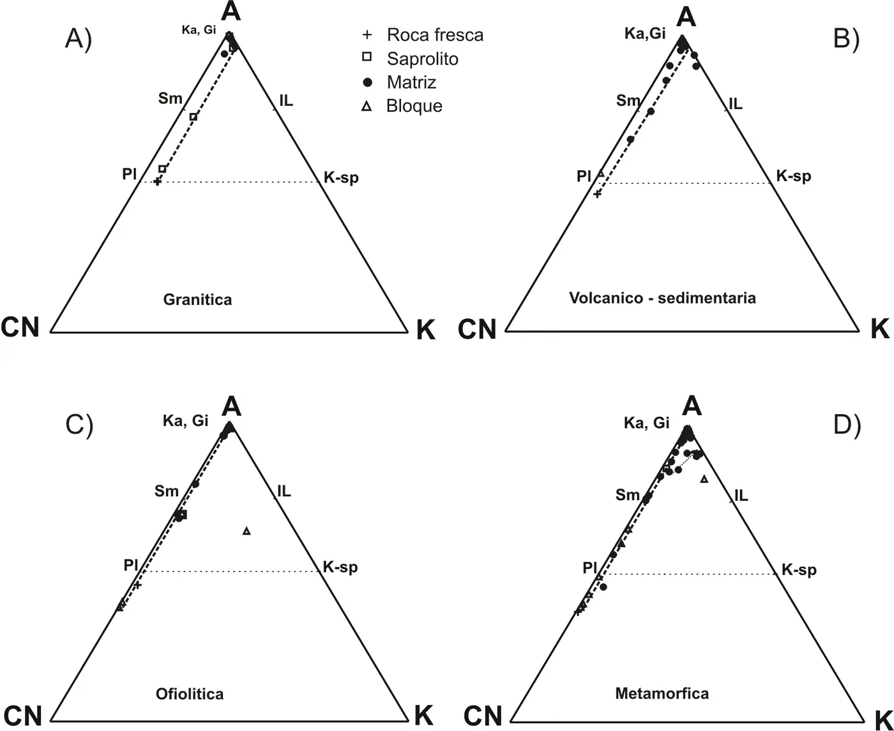
INDICES Y PATRONES DE METEORIZACIÓN
Aristizábal et al, (2005, 2008), Nesbitt & Young (1982, 1984, 1989)
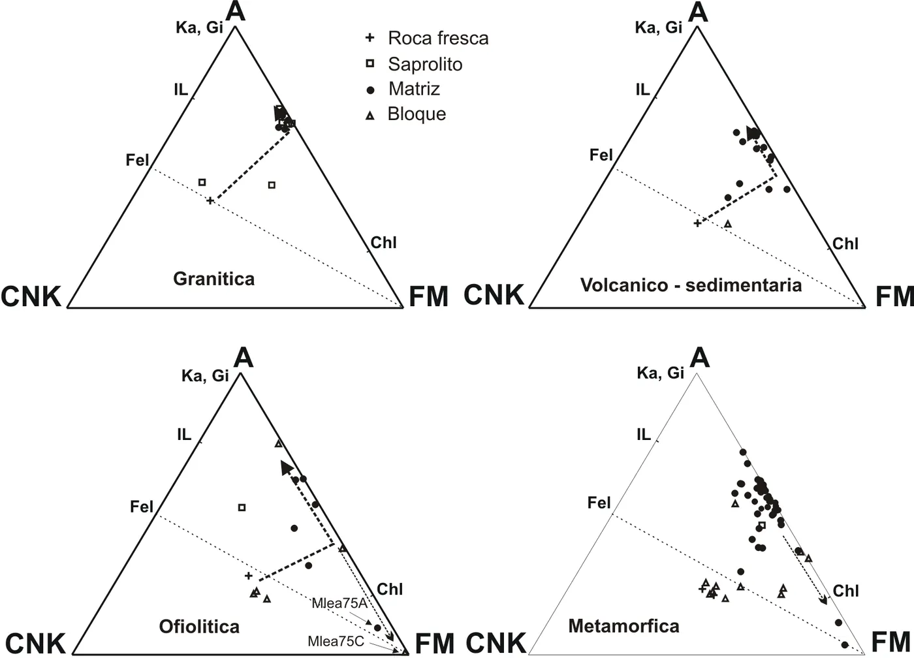
ESTRUCTURA DE LAS ARCILLAS
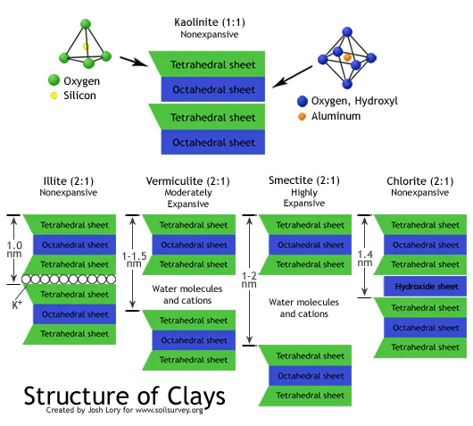
DEFINICIÓN ARCILLAS
Productos originado a partir de la meteorización de las rocas, cuyas partículas son generalmente de tamaño Inferior a 2u, constituido principalmente por aluminosilicatos de origen secundario y componentes accesorios, las cuales su comportamiento está dominado principalmente por la actividad electroquímica.
Aluminosilicatos hidratados cristalinos, algunos con sustitución parcial del aluminio por magnesio o hierro y que incluyen como constituyente en ciertos casos, elementos alcalinos o alcalinoterreos.
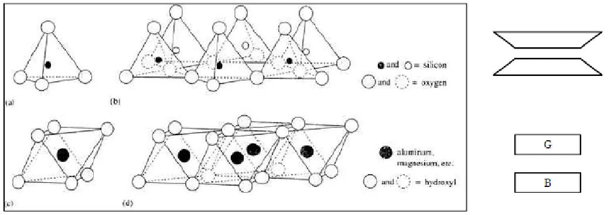
CAOLINITA 1:1
- Las caolinitas son producto de la meteorización del feldespato ortoclasa proveniente del granito.
- Del grupo son: HALOISITA, CAOLINITA, ENDELLITA, DICKITA, ALOFANO, NACRITA Y ANAUXITA.
- Los suelos ricos en caolinita se desarrollan en condiciones de precipitación abundante y altas temperaturas. Por su lixiviación generalmente son pobres en nutrientes para las plantas.
- Baja absorción de agua, baja susceptibilidad a la retracción y a la expansión.
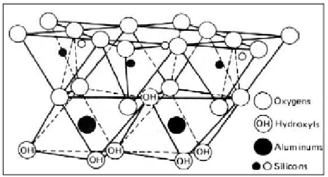
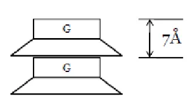
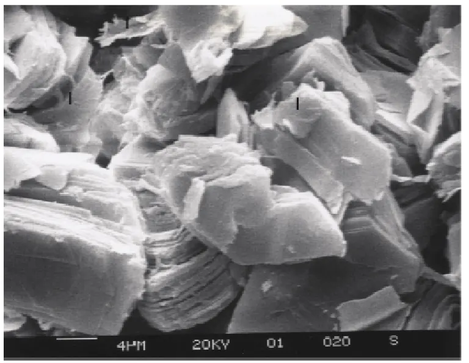
ILLITA 2:1
- La ilita es el resultado de la meteorización de las micas.
- Mayor tendencia a la absorción de agua que las caolinitas, y mayor susceptibilidad a la retracción y la expansión.
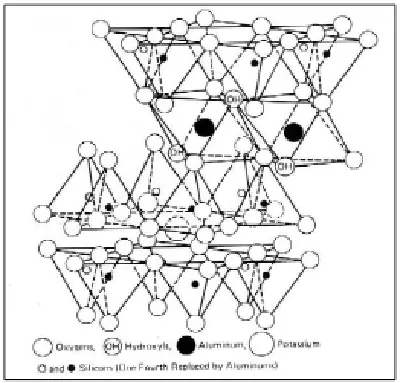
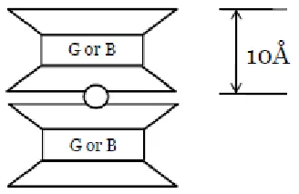
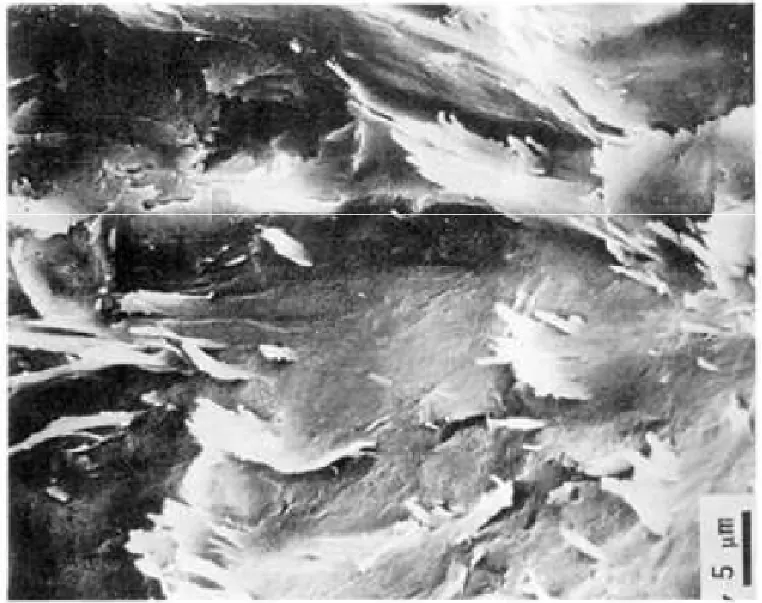
MONTMORILONITA 2:1
- Las montmorilonitas suelen ser el resultado de la meteorización del feldespato plagioclasa en los depósitos de ceniza volcánica.
- Una característica particular del los minerales del grupo de la montmorilonita es su considerable aumento de volumen al absorber partículas de agua.
- Muy alta absorción de agua y muy altas características de retracción y expansión.
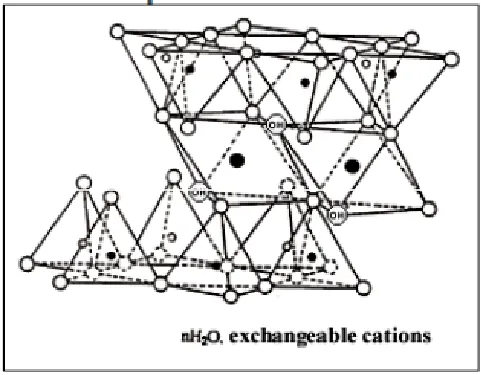
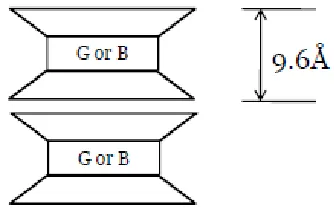
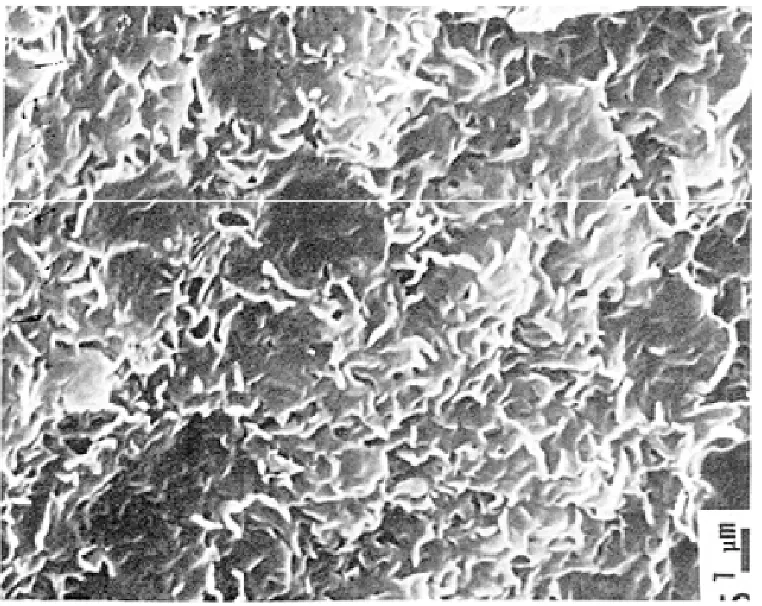
COMPOSICIÓN DEL SUELO
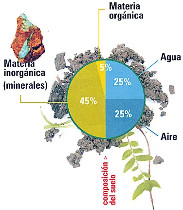
Acidos
- Alkalinos
- Incrementa la tasa de meteorización
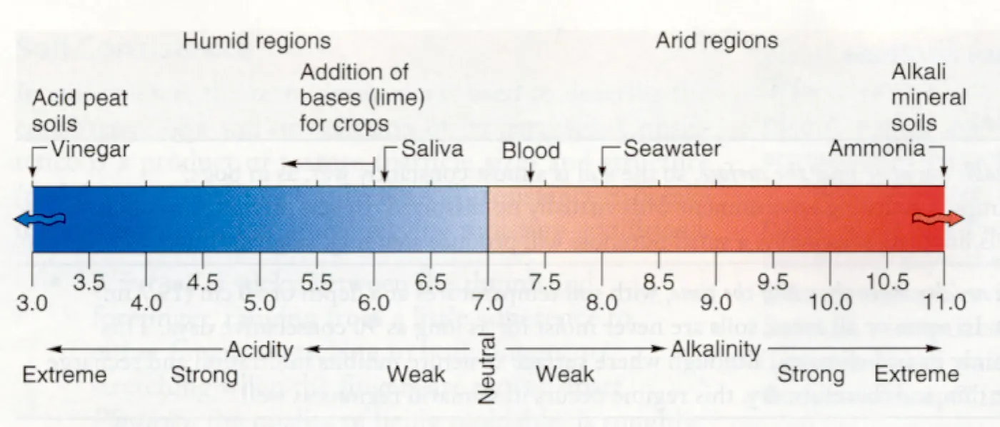
TIPOS DE SUELOS
- Suelos
- Transportados
- Suelos
- Residuales
- Suelos
- Meteorización in situ
- Meteorización y transporte
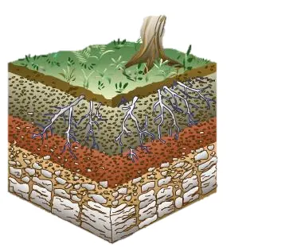
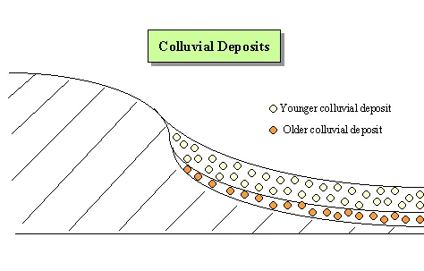
SUELOS TRANSPORTADOS
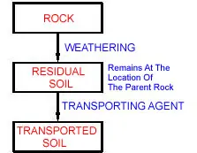
SUELOS TRANSPORTADOS
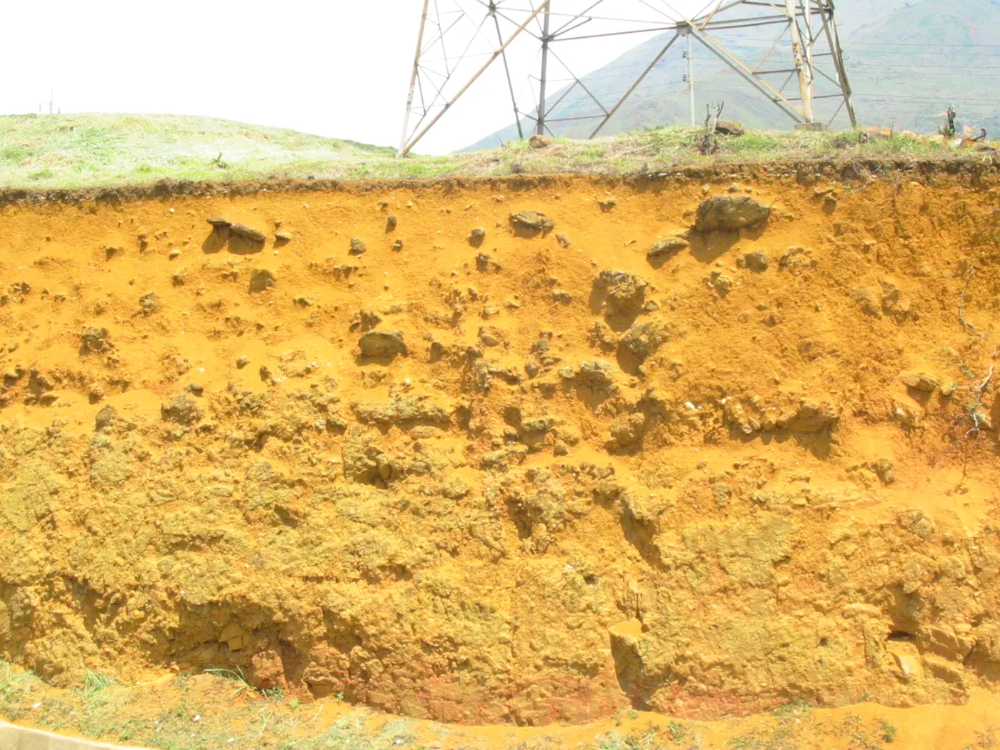
- Se entiende por perfil de un suelo a la sección vertical de un terreno, constituido por una secuencia de horizontes o capas, separables por sus características morfológicas, físicas, químicas y mineralógicas.
- DEFINICIÓN: perfil de suelo
PERFIL TÍPICO DE SUELO
- Suelo residual
- Eluviación
- Suelo saprolítico
- Illuviación o acumulación
- Roca meteorizada
- Roca parental
- Mecánica de suelos
- Mecánica de rocas
- Regolito
PERFIL DE METEORIZACIÓN: Dearman
- Suelo residual tropical
- Anon (1990)
PERFIL DE METEORIZACIÓN: Deere & Patton (1971)

CLASIFICACIONES DEL PERFIL DE METEORIZACIÓN
Vallejo (2002)
CLASIFICACIONES DE SUELOS RESIDUALES (Wesley & Irfan, 1997)
CATENA
CATENA
CLASIFICACIONES DEL PERFIL DE METEORIZACIÓN
| Dearman | Deere & Patton (1971) | Zona |
|---|---|---|
| VI · Suelo residual: sin estructura ni fábrica de la roca parental | IA · Suelo residual con materia orgánica IB · Suelo residual sin estructura heredada | Suelo residual |
| V · Completamente meteorizada: conserva estructura y fábrica | IC · Saprolito: conserva estructura y fábrica | |
| IV · Muy meteorizada: < 50 % bloques | IIA · Transición saprolito – roca meteorizada | Suelo saprolítico |
| III · Moderadamente meteorizada: > 50 % bloques | Roca meteorizada | |
| II · Ligeramente meteorizada: decoloración | IIB · Roca parcialmente meteorizada | |
| I · Roca fresca | III · Roca sin meteorizar | Roca parental |
Del grado I al VI aumenta la meteorización; el conjunto de los horizontes sobre la roca fresca constituye el regolito.
GRANULOMETRÍA
GRANULOMETRÍA
GRANULOMETRÍA
CLASIFICACIÓN DEL SUELO
GRANULOMETRÍA
GRANULOMETRÍA
GRANULOMETRÍA
- Suelo mal seleccionado
- Mejor comportamiento ingenieril
- Suelo bien seleccionado
CURVA GRANULOMÉTRICA

LÍMITES DE CONSISTENCIA
- Expresadas como contenidos de humedad entre cada “estado de consistencia”, son llamadas Límites de Atterberg. (< N° 40, 425 um). La Consistencia se define como la resistencia al flujo, que está relacionado con la fuerza de atracción entre partículas.
- Los contenidos de humedad en los puntos de transición de unos estados a otros se denominan límite de contracción (o de retracción), límite plástico y límite líquido.
- Materia orgánica
- Arcillas 2:1
- F(% arcilla)
CARTA DE CASAGRANDE

SISTEMA DE CLASIFICACIÓN ASTM
INDICES & ACTIVIDAD
- Actividad: Medida aproximada de la superficie específica del suelo. Este parámetro lo ha expresado Skempton (1953) como la pendiente de la línea que relaciona el Índice Plástico de un suelo con su contenido de minerales de tamaño arcilloso
- Índice de liquidez
- Índice de consistencia
COMPASIDAD
Grado de acomodo alcanzado por las partículas del suelo. En un suelo muy compacto, las partículas solidas tiene un alto grado de acomodo y la capacidad de deformación bajo carga será pequeña. El volumen de vacíos y porosidad serán menores.
La compacidad de un suelo es medida con la densidad relativa, que evalúa el grado de empaquetamiento de las partículas del suelo en situ de acuerdo al índice de vacíos máximo y mínimo que permita el suelo
SENSIBILIDAD DE LAS ARCILLAS
Pérdida de resistencia debida al remoldeo. El grado de sensibilidad es la proporción de la resistencia a compresión simple en estado inalterado y la del estado remoldeado.
SUELOS COLAPSABLES
- Zur y Wisemam (1973) definen como colapso a cualquier disminución rápida de volumen del suelo, producida por el aumento de cualquiera de los siguientes factores :
- Contenido de humedad (w)
- Grado de saturación (Sr)
- Tensión media actuante (τ)
- Tensión de corte (σ)
- Presión de poros (u)
- Estructura macroporosa, con índice de vacios (e) entre relativamente alto a muy alto.
- Granulometría predominantemente fina, con predominio de fracciones de limos y de arcilla. El tamaño de los granos es generalmente poco distribuido y con los granos más grandes escasamente meteorizados. La mayoría de las veces, la cantidad de la fracción arcilla es relativamente escasa, pero sin embargo, tiene una influencia importante en el comportamiento mecánico de la estructura intergranular.
- Estructura mal acomodada, con partículas de mayor tamaño separadas por espacios abiertos, y unidas entre sí por acumulaciones o "puentes" de material predominantemente arcilloso. En muchos casos existen cristales de sales solubles insertados en tales puentes o uniones arcillosas. Reginatto (1977)
FASES DEL SUELO
Brajam (2001)

FASES DEL SUELO
- Relaciones volumétricas:
- Relación de vacíos e = Vv / Vs [0 - ∞] [0,25 - 15]
- Porosidad [%] n = Vv / Vt [0 - 100]
- Grado de saturación [%] S = Vw / Vv [0 - 100]
- Volumen especifico v = Vt / Vs
- Humedad volumétrica [%] w = Vw / Vt
- Volumen
- Peso
SUELOS SATURADOS
SUELOS NO SATURADOS
RELACIONES DE FASE: resumen
Ejercicio resuelto paso a paso en el libro del curso, capítulo «Mecánica de suelos».
3. Mecánica de rocas
ROCA INTACTA vs MACIZO ROCOSO
- Roca intacta
- Continua
- Homogénea
- Isotrópica
- Elástica lineal
- Macizo rocoso
- Discontinuo
- Heterogéneo
- Anisotrópico
- No elástico
- Es un medio constituido de bloques de roca intacta (medio continuo) separadas físicamente por discontinuidades (juntas, diaclasas, fallas, estratos, etc.), que pueden contener o no material de relleno.
- Las propiedades mecánicas e hidráulicas del macizo serán gobernadas por las propiedades de la roca intacta y también por el número, posición, naturaleza y condiciones de las discontinuidades.
- Mecánicamente los macizos rocosos son medios discontinuos, anisótropos y heterogéneos. Prácticamente pueden considerarse que presentan una resistencia a la tracción nula.
- MACIZO ROCOSO - Definición
- Túnel Karkatera (Perú)
MACIZO ROCOSO - Definición
PROPIEDADES DE LA ROCA
MACIZO ROCOSO
DISCONTINUIDADES
Son cualquiera de los planos de origen mecánico o sedimentario que independiza o separa los bloques de matriz rocosa de un macizo rocoso. Generalmente la resistencia a la tracción de los planos de discontinuidad es muy baja o nula. Su comportamiento mecánico queda caracterizado por su resistencia al corte o, en su caso, por la del material de relleno.
PLANOS DE ESTRATIFICACIÓN
DIACLASAS
PLANOS DE EXFOLIACIÓN O ESQUISTOCIDAD
CONTACTOS LITOLÓGICOS
VENILLAS
PLIEGUES
DIQUES
DISCONTINUIDADES

DISCONTINUIDADES
ORIENTACIÓN
- Es la extensión en área o tamaño de una discontinuidad. Cuanto menor sea la persistencia, la masa rocosa será más estable y cuanto mayor sea ésta, será menos estable.
- CONTINUIDAD (persistence)
- Es la distancia perpendicular entre discontinuidades adyacentes. Éste determina el tamaño de los bloques de roca intacta. Cuanto menos espaciado tengan, los bloques serán más pequeños y cuanto más espaciado tengan, los bloques serán más grandes.
- ESPACIADO (spacing)
ESPACIADO (spacing)
FORMA DE LOS BLOQUES (block shape)
Barton (1978)
TAMAÑO DE LOS BLOQUES (block size)
- Es la separación entre las paredes rocosas de una discontinuidad o el grado de abierto que ésta presenta. A menor apertura, las condiciones de la masa rocosa serán mejores y a mayor apertura, las condiciones serán más desfavorables.
- ABERTURA (aperture)
ABERTURA (aperture)
- Son los materiales que se encuentran dentro de la discontinuidad. Cuando los materiales son suaves, la masa rocosa es menos competente y cuando éstos son más duros, ésta es más competente.
- RELLENO (filling or coating)
- Es la aspereza o irregularidad de la superficie de la discontinuidad. Cuanto menor rugosidad tenga una discontinuidad, la masa rocosa será menos competente y cuanto mayor sea ésta, la masa rocosa será más competente.
- RUGOSIDAD (roughness)
RUGOSIDAD (roughness)
FILTRACIONES (seepage)
RESISTENCIA AL CORTE DE LAS DISCONTINUIDADES
CLASIFICACIÓN GEOMECÁNICA DE MACIZOS ROCOSOS
ROCK QUALITY DESIGNATION (RQD)
- El RQD es un índice cualitativo de la calidad de la macizo rocos basado en testigos de perforaciones.
- Desarrollado por Deere (1964) y Deere et al. (1967).
- El RQD es la suma de los testigos intactos recuperados mayores a 10 cm dividido por el total de la longitud del tramo evaluado.
- Es una medida del grado de fracturas, diaclasas y discontinuidades del macizo rocoso.
- La perforación debe ser por lo menos del tamaño NW (54.7 mm – 2.15 “).
- Palmstrom (1982) sugiere una relación para macizos rocosos libres de arcillas donde no se tienen testigos de perforaciones disponibles de la siguiente manera:
- RQD = 115 – 3.3 Jv Jv es el numero de superficies de fracturas por unidad de área
ROCK QUALITY DESIGNATION (RQD)
ROCK QUALITY DESIGNATION (RQD)
ROCK QUALITY DESIGNATION (RQD)
TUNNELLING QUALITY INDEX Q
SISTEMA DE CLASIFICACION Q
SISTEMA DE CLASIFICACION Q
SISTEMA DE CLASIFICACION Q
SISTEMA DE CLASIFICACION Q
SISTEMA DE CLASIFICACION Q
SISTEMA DE CLASIFICACION Q
SISTEMA DE CLASIFICACION Q
SISTEMA DE CLASIFICACION Q
EQUIVALENT DIMENSION (De)
CATEGORIAS DE SOPORTE BASADAS EN EL Q
CATEGORIAS DE SOPORTE BASADAS EN EL Q
ROCK MASS RATING (RMR)
- Propuesta por Bieniawski (1976) par el uso en túneles en roca duras y livianas.
- Fue revisada por Bieniawski (1989) para incorporar mas datos de campo.
- Se compone de 6 parámetros para clasificar la roca:
- A1. La resistencia uniaxial compresiva de la roca intacta (Rc), que puede ser determinada con golpes de picota o con otros procedimientos como los ensayos de laboratorio (0-15)
- A2. El RQD (Rock Quality Designation). (3-20)
- A3. El espaciamiento de las discontinuidades. (5-20)
- A4. La condición de las discontinuidades, referidas en este caso a la persistencia, apertura, rugosidad, relleno y meteorización. (0-30)
- A5. La presencia de agua. (0-15)
- A6. La orientación de las discontinuidades. (-60 – 0)
- RMR = A1 + A2 + A3 + A4 + A5+ A6
ROCK MASS RATING (RMS)
ROCK MASS RATING (RMS)
GEOLOGICAL STRENGTH INDEX (GSI)
Propuesto por Hoek (1994) y Hoek et al. (1995) como función del grado y las características de la fracturación, estructura geológica, tamaño de los bloques y alteración de las discontinuidades.
GEOLOGICAL STRENGTH INDEX (GSI)

CLASIFICACIONES
MODELO GEOTÉCNICO EN ROCAS
4. El agua en el suelo y el macizo rocoso
EFECTOS DEL AGUA
EFECTOS CAPILARES
CICLO HIDROLÓGICO
SUELOS PARCIALMENTE SATURADOS
EL AGUA EN EL SUELO
EL AGUA EN EL SUELO
- Overland runoff
- Static storage

EL AGUA EN EL SUELO
TENSIÓN SUPERFICIAL
Tensión superficial de un líquido a la cantidad de energía necesaria para aumentar su superficie por unidad de área. Esta definición implica que el líquido tiene una resistencia para aumentar su superficie.
La tensión superficial se debe a que las fuerzas que afectan a cada molécula son diferentes en el interior del líquido y en la superficie. Así, en el seno de un líquido cada molécula está sometida a fuerzas de atracción que en promedio se anulan. Sin embargo, en la superficie hay una fuerza neta hacia el interior del líquido.
Fuente: Wikipedia
EFECTOS CAPILARES
- La tensión superficial junto a las fuerzas que se dan entre los líquidos y las superficies sólidas que entran en contacto con ellos da lugar a la capilaridad.
- Presión
EFECTOS CAPILARES
En suelos arenosos
EFECTOS CAPILARES Y SUCCIÓN

EFECTOS CAPILARES Y SUCCIÓN
Venka (2006)
SUCCIÓN
- Succión matricial: diferencia entre la presión del aire y la presión de los poros.
- Succión osmótica: función de las características químicas del fluido en los poros
CURVA CARACTERISTICA EN SUELOS

CURVA CARACTERISTICA EN SUELOS - histéresis
HISTÉRESIS
FLUJO ESTACIONARIO vs FLUJO TRANSITORIO
Flujo transitorio: flujo variable con el tiempo.
Flujo estacionario: cuando no varia con el tiempo.
La presión de poros en un suelo con frecuencia no es la que corresponde a las condiciones hidrostáticas, sino aquellas creada por el flujo de agua a través de los poros del suelo.
Cuando se presenta una diferencia de nivel se genera un flujo, al inicio la presión de poros cambia de los valores iniciales a unos valores de acuerdo con las nuevas condiciones de frontera. Durante este periodo el flujo cambia en función del tiempo y se denomina flujo transitorio. Cuando la presión de poros en toda la masa se equilibra con las nuevas condiciones de frontera, el flujo se denomina estacionario.
Arenas y gravas instantáneo Suelos finos varios años (consolidación)
CARGA HIDRÁULICA
Según el principio de Bernoulli, la carga total en un punto de agua en movimiento es:
$$h = z + \frac{u}{\gamma_w} + \frac{v^2}{2g}$$En los suelos la velocidad de flujo es muy pequeña, así que la carga de velocidad se desprecia y la carga total se reduce a la altura piezométrica:
$$h = z + \frac{u}{\gamma_w}$$\(z\): carga de elevación; \(u/\gamma_w\): carga de presión.
FLUJO A TRAVÉS DE UN MEDIO POROSO
- La pérdida de carga total entre dos puntos A y B se representa por Δh, la cual se puede expresar en forma adimensional como i = Δh / L, donde i es el gradiente hidráulico, que define la energía perdida o la pérdida de carga total por unidad de longitud. L es la distancia donde ocurre la pérdida de carga.
- Gradiente hidráulico
- Gradiente de presión
FLUJO LAMINAR Y TURBULENTO
Estudios experimentales señalan que para condiciones de flujo laminar en suelos:
FLUJO LAMINAR Y TURBULENTO
LEY DE DARCY (1856)
- Medio poroso, homogéneo, isotrópico y saturado.
- La constante k se conoce como coeficiente de permeabilidad (también referido como conductividad hidráulica) del suelo, y tiene unidades de velocidad (cm/s). Medida de la resistencia del suelo al flujo de agua.
LEY DE DARCY (1856)
$$v = k\,i \qquad i=\frac{\Delta h}{L} \qquad q = k\,i\,A$$- \(v\): velocidad de descarga (caudal por unidad de área total)
- \(k\): conductividad hidráulica (cm/s o m/s)
- \(i\): gradiente hidráulico (adimensional)
- Válida para flujo laminar en medio poroso, homogéneo, isotrópico y saturado
CONDUCTIVIDAD HIDRÁULICA (k)
- El valor de K está influenciado por:
- La relación de vacíos
- El tamaño y forma de los poros
- El espacio de los poros interconectados
- La distribución de tamaños de partículas
- La homogeneidad de la masa de suelo
- Grado de humedad
- Composición de las partículas para suelos finos
- Taylor (1948)
- Muskat (1937)
CONDUCTIVIDAD HIDRÁULICA (k)
Saez (xxxx)
MÉTODOS A PARTIR DE LA CURVA GRANULOMÉTRICA
Hazen (1892): relación empírica para arenas uniformes (\(C_u\) pequeño):
$$k\ (\text{cm/s}) = C\,D_{10}^2$$\(D_{10}\): tamaño efectivo (mm); \(C\) varía entre 0,4 y 1,4 según el autor (Das sugiere 1,0–1,5).
Solo da un orden de magnitud: no considera la estructura, la fábrica ni la anisotropía del depósito.
CONDUCTIVIDAD HIDRÁULICA (k)
CONDUCTIVIDAD HIDRÁULICA vs SUCCIÓN
VELOCIDAD DE DESCARGA Y DE FILTRACIÓN
Brajam (2002)
VELOCIDAD DE FILTRACIÓN Y DE FLUJO
- (Velocidad real del flujo)
- Factor der “sinuosidad” = f(lR)
- lR : longitud real de flujo
- DESCONOCIDO!!!
CONDUCTIVIDAD HIDRÁULICA (k)
EJEMPLO 1
REDES DE FLUJO: ecuación de Laplace
Para flujo bidimensional estacionario en un medio saturado e incompresible:
$$k_x\frac{\partial^2 h}{\partial x^2}+k_z\frac{\partial^2 h}{\partial z^2}=0 \quad\xrightarrow{\;k_x=k_z\;}\quad \frac{\partial^2 h}{\partial x^2}+\frac{\partial^2 h}{\partial z^2}=0$$Su solución gráfica son dos familias de curvas ortogonales: líneas de flujo y líneas equipotenciales. El caudal por unidad de longitud es:
$$q = k\,H\,\frac{N_f}{N_d}$$\(N_f\): número de canales de flujo; \(N_d\): número de caídas de potencial; \(H\): pérdida total de carga.
REDES DE FLUJO
Red de Flujo: Representación gráfica de los caminos recorridos por el agua. Está constituida por líneas de flujo (trayectoria de las partículas) y por líneas equipotenciales (líneas de igual carga total: carga de posición + carga de presión).
REDES DE FLUJO
REDES DE FLUJO
REDES DE FLUJO
REDES DE FLUJO
EJEMPLO: redes de flujo
- Problema 4:
- La siguiente figura, muestra una red de flujo para el flujo alrededor de una sola hilera de tablestacas en un estrato de suelo permeable. Se dan kx=kz=k=5x10-3 cm/s.
- A qué altura (arriba de la superficie del terreno) se elevará el agua si los piezómetros se colocan en los puntos a, b, c y d?.
- Cuál es la tasa de infiltración a través del canal de flujo II por unidad de longitud (perpendicular a la sección mostrada)?
EJEMPLO: redes de flujo
- Solución problema 4:
- La siguiente figura, muestra una red de flujo para el flujo alrededor de una sola hilera de tablestacas en un estrato de suelo permeable. Se dan kx=kz=k=5x10-3 cm/s.
FUERZAS DE FILTRACIÓN
El agua en movimiento ejerce sobre las partículas una fuerza de arrastre, que se suma al empuje hidrostático de Arquímedes. Por unidad de volumen de suelo:
$$j = i\,\gamma_w$$Cuando el flujo es ascendente y \(j\) iguala al peso unitario sumergido, el esfuerzo efectivo se anula (sifonamiento o «arena movediza»):
$$i_{cr}=\frac{\gamma'}{\gamma_w}=\frac{G_s-1}{1+e}\approx 1$$SEEPAGE EROSION
- Funciones de los Filtros:
- Abatir NF
- Drenar el agua
- Separar materiales
- Cortar el ascenso capilar
DISEÑO DE FILTROS (Terzaghi & Peck, 1948)
Condición 1 (retención): los poros del filtro deben retener las partículas del suelo protegido.
$$\frac{D_{15(F)}}{D_{85(S)}} < 4\ \text{a}\ 5$$Condición 2 (permeabilidad): el filtro debe drenar mucho mejor que el suelo.
$$\frac{D_{15(F)}}{D_{15(S)}} > 4\ \text{a}\ 5$$Adicionales: curva del filtro paralela a la del suelo, pasa tamiz N.º 200 < 5 % para evitar el autosifonamiento.
EJEMPLO – Diseño de filtros
Para la construcción de una presa en tierra se debe diseñar e instalar un filtro que separe el material fino del centro de la presa con el material grueso de la cara aguas abajo de la presa. Si el material fino tiene un D15: 0,02 mm, un D50: 3 mm y un D85 de 16 mm, por favor diseñe la granulometría del filtro y del material grueso de la presa de tal forma que se el filtro no se lave y mantenga la alta conductividad hidráulica del material grueso. Grafique las curvas granulométricas de los tres materiales (fino, filtro y grueso).
5. Estado de esfuerzos
ESTADO DE ESFUERZOS EN EL SUELO
- Elemento de suelo
- Capacidad portante asentamientos
- Empuje lateral
- El terreno, bajo la acción de su propio peso y de los esfuerzos que le transmiten las estructuras, se encuentra en un cierto estado de esfuerzos. En cada punto del terreno hay un cierto estado de tensiones. Si en dicho punto se considera un pequeño volumen, en cada cara actuará una fuerza proveniente del suelo que le circunda.
- Estado de esfuerzos
- Tensor
- Análisis bidimensional
ESTADO DE ESFUERZOS – Definiciones
Una fuerza \(F\) que actúa sobre un plano de área \(A\) se descompone en una componente normal \(F_n\) y una tangencial \(F_t\):
$$\sigma = \frac{F_n}{A}\qquad\qquad \tau=\frac{F_t}{A}$$En geotecnia la convención es compresión positiva, al contrario de la mecánica de materiales.
ESTADO DE ESFUERZOS - Definiciones
El estado de tensión de un punto puede ser definido, tomando un cubo unitario, en un sistema de referencia xyz, en cada cara de este cubo estará actuando una tensión normal y dos cizallantes. Por equilibrio de fuerzas se tiene que las tensiones actuantes en las caras opuestas son iguales.
TENSOR DE ESFUERZOS
$$\boldsymbol{\sigma}=\begin{bmatrix}\sigma_x & \tau_{xy} & \tau_{xz}\\ \tau_{yx} & \sigma_y & \tau_{yz}\\ \tau_{zx} & \tau_{zy} & \sigma_z\end{bmatrix}\qquad \tau_{xy}=\tau_{yx},\ \tau_{xz}=\tau_{zx},\ \tau_{yz}=\tau_{zy}$$Por equilibrio de momentos el tensor es simétrico: bastan 6 componentes para definir el estado de esfuerzos en un punto.
ESTADO DE ESFUERZOS - Convenciones
ESTADO DE ESFUERZOS EN UNA MASA DE SUELO
En casos de muros, terraplenes, cortes, cimentaciones de las estructuras, el suelo es sometido generalmente a un esfuerzo muy grande en una sola dirección. Esto aproxima el suelo a una deformación plana. Por lo tanto el problema se reduce a un análisis bidimensional.
ANÁLISIS BIDIMENSIONAL – CIRCULO DE MOHR
MÉTODO PARA GRAFICAR EL CIRCULO DE MOHR
- A continuación describiremos un procedimiento para graficar el círculo de Mohr para un elemento diferencial sometido a un estado plano de esfuerzos. Se tomarán las siguientes convenciones:
- - Los esfuerzos normales se representarán en la abscisa y los esfuerzos cortantes en la ordenada.
- - Los esfuerzos normales de tracción (positivos) se ubicarán en la parte derecha de la abscisa.
- - Los esfuerzos cortantes se tomarán como positivos si en su plano de acción hacen girar al elemento en sentido contrario a las agujas del reloj.
- - Los esfuerzos cortantes positivos se ubicarán en la parte superior de las ordenadas.
VENTAJAS DE TRABAJAR CON EL CIRCULO DE MOHR
- Para definir el círculo de Mohr, sólo necesitan conocerse los parámetros σx, σy y txy, y pueden determinarse de forma rápida y precisa:
- - El esfuerzo normal y cortante para cualquier plano.
- - Los esfuerzos principales (σ1 y σ2).
- - Las orientaciones de los planos donde ocurren los esfuerzos principales.
- - El esfuerzo cortante máximo (tmax).
- - La orientación del plano donde ocurre el esfuerzo cortante máximo.
MÉTODO PARA GRAFICAR EL CIRCULO DE MOHR
- Los pasos a seguir son:
- 1. Graficar los puntos (sx,txy) y (sy,tyx), que indican los esfuerzos que actúan sobre los planos x e y respectivamente.
- Note que en este caso, txy hace girar al elemento en sentido antihorario y tyx lo hace girar en sentido contrario, por lo cual el primero se ubica en el sector positivo de las ordenadas, siguiendo la convención general establecida.
- También es importante señalar que para el caso mostrado, ambos esfuerzos normales (σx y σy) son de tracción.
MÉTODO PARA GRAFICAR EL CIRCULO DE MOHR
2. Trazar una línea que una los puntos (sx,txy) y (sy,tyx) y definir la dirección x, como se muestra. Observe que la línea trazada corta el eje de las abscisas en el valor sprom.
MÉTODO PARA GRAFICAR EL CIRCULO DE MOHR
3. Con centro en el punto (sprom,0), trazar una circunferencia que pase por los puntos (sx,txy) y (sy,tyx).
ANÁLISIS BIDIMENSIONAL – EJEMPLO
PUNTO DEL POLO
Sobre la circunferencia de todo círculo de Mohr existe un punto denominado polo que tiene una característica única: Una línea trazada a partir del polo paralela a un plano dado en el suelo cortará el círculo en un punto cuyas coordenadas corresponden a las componentes normal y cortante del esfuerzo en ese plano.
ANÁLISIS BIDIMENSIONAL – Ecuaciones
Para un plano inclinado \(\theta\) respecto al plano donde actúa \(\sigma_x\):
$$\sigma_\theta=\frac{\sigma_x+\sigma_z}{2}+\frac{\sigma_x-\sigma_z}{2}\cos2\theta+\tau_{xz}\sin2\theta$$ $$\tau_\theta=\frac{\sigma_x-\sigma_z}{2}\sin2\theta-\tau_{xz}\cos2\theta$$Esfuerzos principales y cortante máximo:
$$\sigma_{1,3}=\frac{\sigma_x+\sigma_z}{2}\pm\sqrt{\left(\frac{\sigma_x-\sigma_z}{2}\right)^2+\tau_{xz}^2}\qquad \tau_{max}=\frac{\sigma_1-\sigma_3}{2}$$Fuente: Holtz & Kovacs (1981)
EJEMPLO 1: circulo de Mohr
Fuente: Holtz & Kovacs (1981)
EJEMPLO 2: circulo de Mohr
Fuente: Holtz & Kovacs (1981)
EJEMPLO 3: circulo de Mohr
Fuente: Holtz & Kovacs (1981)
EJEMPLO 4: punto del polo
MÉTODO DEL POLO
- Ubique los puntos \((\sigma_x,\tau_{xz})\) y \((\sigma_z,-\tau_{xz})\) y trace el círculo con centro en \(\left(\tfrac{\sigma_x+\sigma_z}{2},0\right)\).
- Desde el punto que representa los esfuerzos de un plano conocido, trace una línea paralela a ese plano: donde corta el círculo está el polo P.
- Desde P trace una paralela al plano de interés: su intersección con el círculo da \((\sigma_n,\tau_n)\) sobre ese plano.
- Las líneas de P a \(\sigma_1\) y \(\sigma_3\) dan la orientación de los planos principales.
El polo es único para cada círculo y permite pasar de la geometría del terreno a los esfuerzos sin usar ángulos dobles.
ESFUERZO NORMAL Y CORTANTE EN UN PLANO
Para determinar el esfuerzo normal y cortante de cualquier plano con dirección θ, se traza un radio que corte el círculo y esté inclinado un ángulo igual a 2θ respecto al eje x. Las coordenadas del punto de corte son los valores de los esfuerzos sθ y tθθ’ en el plano en cuestión.
ESFUERZOS PRINCIPALES
- Los esfuerzos principales son los cortes de la circunferencia con el eje de las abscisas (s). Las orientaciones de los planos principales se miden desde el eje x hasta el eje horizontal.
- Note que en los planos donde ocurren los esfuerzos principales, el esfuerzo cortante es nulo.
- Observe también que para cualquier círculo de Mohr, el ángulo entre los planos principales 1 y 2 siempre es 2q=180º, es decir, q=90º.
DIRECCIONES DE LOS ESFUERZOS PRINCIPALES
ESFUERZO CORTANTE MÁXIMO
- El esfuerzo cortante máximo puede determinarse trazando un radio perpendicular al eje de las abscisas.
- Puede observarse que es posible determinar la orientación del plano donde ocurre este esfuerzo respecto al eje x.
- Note que para cualquier círculo de Mohr, entre los planos donde ocurren los esfuerzos principales y los esfuerzos cortantes máximos existe siempre un ángulo 2q=90º, es decir, q=45º.
EJEMPLO – CIRCULO DE MOHR
EJEMPLO – CIRCULO DE MOHR
EJEMPLO – CIRCULO DE MOHR
ANÁLISIS TRIDIMENSIONAL
DIAGRAMAS p-q
En muchos problemas de geotecnia se requiere representar en un solo diagrama muchos estados de esfuerzos para una muestra de suelo. De igual forma otro tipo de problemas requiere representar varios estados de esfuerzos para varios tipos de suelo.
DIAGRAMAS p–q
Cada círculo de Mohr se representa por un solo punto, el de su cortante máximo:
$$p=\frac{\sigma_1+\sigma_3}{2}\qquad q=\frac{\sigma_1-\sigma_3}{2}$$La sucesión de puntos (p, q) durante un proceso de carga es la trayectoria de esfuerzos. La envolvente de Mohr–Coulomb en este diagrama es la línea \(K_f\):
$$q = a + p\tan\alpha\qquad \sin\phi=\tan\alpha\qquad c=\frac{a}{\cos\phi}$$TRAYECTORIA DE ESFUERZOS (p and q)
6. Esfuerzos efectivos
RESISTENCIA DE MATERIALES
- Resistencia: capacidad para soportar una carga aplicada sin fallar.
- Resistencia a la compresión
- Resistencia a la tensión
- Resistencia a la cizalla
- Es función de los esfuerzos efectivos, por lo que debemos conocer las presiones de poro.
CURVAS ESFUERZO – DEFORMACIÓN
- Elástico: la deformación se recupera al descargar.
- Elastoplástico: tras la fluencia el material se deforma a esfuerzo constante.
- Elastoplástico con ablandamiento: alcanza un pico (F) y cae a un valor residual (R). Es típico de arcillas sobreconsolidadas y arenas densas.
- Frágil: falla súbita tras el pico, como en las rocas.
F = falla; R = resistencia residual.
ESFUERZO vs DEFORMACIÓN
Dentro de campo de la relación Esfuerzo – Deformación de los suelos pueden identificarse dos categorías de problemas en ingeniería:
Problemas de esfuerzos y deformaciones: Equilibrio estático, cuando los niveles de esfuerzos se restringen a un rango de trabajo por debajo del valor de falla y dentro de la parte inicial, aproximadamente lineal de la curva Esfuerzo – Deformación.
Problemas de estabilidad: Equilibrio límite en estado de falla a cortante a lo largo de una superficie de deslizamiento potencial.
Suposición: suelo C.H.I.L.E. : Continuo Homogéneo Isotrópico Linealmente Elástico
PRINCIPIO DE ESFUERZO EFECTIVO
- El esfuerzo total transmitido a un suelo se divide en dos partes:
- 1. Dentro del esqueleto del suelo que resultan de las fuerzas que actúan sobre los puntos de contacto entre partículas individuales.
- Dentro del fluido intersticial que ocupa los vacíos del suelo.
PRINCIPIO DE ESFUERZO EFECTIVO
PRINCIPIO DE ESFUERZO EFECTIVO
PRINCIPIO DE ESFUERZO EFECTIVO
PRINCIPIO DE ESFUERZO EFECTIVO
PRINCIPIO DE ESFUERZO EFECTIVO: deducción
Una columna de suelo saturado de área \(A\) y profundidad \(z\) pesa \(W = W_s + W_w\). Por Arquímedes, las partículas sumergidas reciben un empuje \(U=\gamma_w V_s\), de modo que:
$$W = W'_s + \gamma_w (V_s+V_w) = W'_s + \gamma_w A z$$Al dividir por \(A\):
$$\underbrace{\frac{W}{A}}_{\sigma} = \underbrace{\frac{W'_s}{A}}_{\sigma'} + \underbrace{\gamma_w z}_{u}\qquad\Longrightarrow\qquad \boxed{\sigma' = \sigma - u}$$PRINCIPIO DE ESFUERZO EFECTIVO (Terzaghi, 1936)
«…Todos los efectos medibles de un cambio de esfuerzo, tales como compresión, distorsión y un cambio de resistencia cortante, son exclusivamente debidos a cambios en los esfuerzos efectivos σ′1, σ′2 y σ′3. Por lo tanto, cualquier investigación en la estabilidad de un cuerpo saturado de suelo requiere el conocimiento tanto del esfuerzo total como de la presión de poros.»$$\sigma' = \sigma - u$$
RESUMEN: PRINCIPIO DE ESFUERZO EFECTIVO
El esfuerzo efectivo en cualquier dirección está definido como la diferencia entre el esfuerzo total en dicha dirección y la presión del agua que existe en los vacíos del suelo. El esfuerzo efectivo es por lo tanto una diferencia de esfuerzos.

RESUMEN: PRINCIPIO DE ESFUERZO EFECTIVO
EJEMPLO: PRINCIPIO DE ESFUERZO EFECTIVO
EJEMPLO 1: principio de esfuerzo efectivo
EJEMPLO 2: principio de esfuerzo efectivo
Perfil: 5 m de arena sobre 4 m de grava y luego roca. NF a −2 m. \(\gamma_{arena}=17\) kN/m³ (seca), \(\gamma_{sat,arena}=20{,}5\), \(\gamma_{sat,grava}=21{,}5\) kN/m³, \(\gamma_w\approx10\) kN/m³.
| z (m) | σ (kPa) | u (kPa) | σ′ (kPa) | σ′ si NF baja a −5 m |
|---|---|---|---|---|
| 0 | 0 | 0 | 0 | 0 |
| 2 | 2×17 = 34 | 0 | 34 | 34 |
| 5 | 34 + 3×20,5 = 95,5 | 30 | 65,5 | 85 |
| 9 | 95,5 + 4×21,5 = 181,5 | 70 | 111,5 | 171 − 40 = 131 |
Al bajar el nivel freático el esfuerzo efectivo aumenta: es la causa de la subsidencia por bombeo de acuíferos.
EJEMPLO 3: principio de esfuerzo efectivo
- Calcule los esfuerzos totales, efectivos y presiones de poros a una profundidad de 15 m por debajo del fondo de un lago de 6 m de profundidad. El fondo del lago está conformado por arcillas con un espesor que supera los 15 m, un contenido de agua promedio de 40% y la gravedad especifica puede asumirse como 1,65.
- Los esfuerzos totales a 15 m bajo el fondo del lago:
- Las presiones de poros a 15 m bajo el fondo del lago:
- Los esfuerzos efectivos a 15 m bajo el fondo del lago:
INFILTRACIÓN HACIA ARRIBA

A la profundidad \(z\) dentro de una muestra con flujo ascendente y gradiente \(i\):
$$\sigma' = z\,\gamma' - i\,z\,\gamma_w \qquad\Rightarrow\qquad \sigma'=0 \ \text{ si }\ i_{cr}=\frac{\gamma'}{\gamma_w}$$CASO: INFILTRACIÓN HACIA ARRIBA
CASO: INFILTRACIÓN HACIA ABAJO
Error en Das (1999)
EJEMPLO 1: infiltración hacia arriba
Nota: este ejercicio esta mal desarrollado en Das (1999)
EJEMPLO 1: infiltración hacia arriba
EJEMPLO 2: infiltración hacia arriba
- Gradiente hidráulico
- e = 0,65
EJEMPLO 3: infiltración hacia arriba
Espesor de arena gruesa: 3,45 m – 1,25 = 2,20 m
7. Distribución de esfuerzos verticales
DISTRIBUCIÓN DE ESFUERZOS VERTICALES
- Predicción de esfuerzos y deformaciones en los suelos cuando los niveles de esfuerzo se restringen a un rango de trabajo muy por debajo del valor de falla y dentro de la parte inicial, aproximadamente lineal, de la curva esfuerzo – deformación. Se dice que el suelo esta en equilibrio elástico. Las distribuciones de esfuerzo y deformación se determinan bajo el supuesto de que el suelo se comporta como:
- Material homogéneo
- Isotrópico
- Linealmente elástico
- CHILE: Continuo Homogéneo Isotrópico Linealmente Elástico
PRINCIPIO DE SUPERPOSICIÓN
ESFUERZO POR UNA CARGA PUNTUAL
Solución de Boussinesq (1983):
Fuente: Das (1999)
ESFUERZO POR UNA CARGA PUNTUAL
Fuente: Crespo Villalaz (2004)
BULBO DE PRESIONES
Isóbaras = líneas de igual presión
ESFUERZO POR UNA CARGA PUNTUAL
ESFUERZO VERTICAL POR UNA CARGA LINEAL
Solución de Boussinesq (1983)
PRINCIPO DE SUPERPOSICIÓN
- ESFUERZO VERTICAL POR UNA CARGA DE FRANJA (ancho finito-longitud infinita)
- Solución de Boussinesq (1983)
ESFUERZO VERTICAL POR UNA CARGA DE FRANJA (ancho finito-longitud infinita)
EJEMPLO - ESFUERZO VERTICAL POR UNA CARGA DE FRANJA
ESFUERZO VERTICAL POR UNA CARGA CIRCULAR
Solución de Boussinesq (1983)
ESFUERZO VERTICAL POR UNA CARGA CIRCULAR
ESFUERZO VERTICAL POR UNA CARGA RECTANGULAR
Solución de Boussinesq (1983)
ESFUERZO VERTICAL POR UNA CARGA RECTANGULAR
ESFUERZO VERTICAL POR UNA CARGA RECTANGULAR
ESFUERZO VERTICAL POR UNA CARGA RECTANGULAR
Principio de superposición
EJEMPLO
CARTA DE INFLUENCIA POR PRESIONES VERTICALES
- Newmark (1942):
- IV = Valor de influencia
- M = Número de elementos
- q = carga
- Determine la profundidad z debajo del área cargada donde se quiere conocer 𝝙𝝈
- Dibuje la planta del área cargada a escala de z igual a AB.
- Ubique la planta en la carta de influencia con el punto debajo la carga en el centro.
- Cuente el numero de elemento (M)

CARTA DE INFLUENCIA POR PRESIONES VERTICALES
EJEMPLO
EJEMPLO
8. Compactación
MÉTODOS DE MEJORAMIENTO DE SUELOS
- FÍSICOS
- Confinamiento
- Consolidación previa
- Mezclas
- QUÍMICOS
- Con sal
- Con cemento
- Con asfalto
- Con cal
- Con otras substancias
- MÉCANICOS
- COMPACTACIÓN
- GENERALIDADES
COMPACTACIÓN - Definición
La compactación en el proceso realizado generalmente por medios mecánicos por el cual se obliga a las partículas de suelo a ponerse mas en contacto con otras, mediante la expulsión del aire de los poros, lo que implica una reducción mas o menos rápida de las vacíos, lo que produce en el suelo cambios de volumen de importancia, principalmente en el volumen de aire, ya que por lo general no se expulsa agua de los huecos durante el proceso de compactación, siendo por lo tanto la condición de un suelo compactado la de un suelo parcialmente saturado.
COMPACTACIÓN - objetivo
- Mejorar las propiedades ingenieriles del material:
- Aumenta la resistencia y capacidad de carga del suelo,
- Reduce la compresibilidad y disminuye la aptitud para absorber agua,
- Reduce los asentamientos,
- Reduce el efecto de contracción,
- Mejora las condiciones de esfuerzo – deformación.
- La compactación muy intensa produce un material muy susceptible al agrietamiento.
- Aumenta el potencial de hinchamiento (con la humedad) en suelos finos y el potencial de expansión por las heladas.
COMPACTACIÓN
- Las técnicas de compactación se aplican para mejorar las propiedades mecánicas de los suelos utilizados en la construcción de:
- diques,
- presas de tierra,
- terraplenes,
- muelles,
- pavimentos,
- Mejoramiento de terrenos naturales para cimentaciones.
- Rodillo Pata de Cabra
- Rodillo Liso
- Neumática
EQUIPOS DE COMPACTACIÓN
- Por presión estática
- Por impacto
- Por vibración
COMPACTACIÓN
- El proceso de compactación depende del tipo de materiales con los que se trabaje en cada caso, así:
- Para materiales netamente friccionantes (arena, gravas), se compactan eficientemente por métodos vibratorios.
- Para materiales plásticos (arcillas), el procedimiento de carga estática resulta más ventajoso.
ENSAYOS DE LABORATORIO
- Proctor estándar (ASTM D698): martillo de 24,5 N, caída 305 mm, 3 capas × 25 golpes, energía ≈ 600 kN·m/m³.
- Proctor modificado (ASTM D1557): martillo de 44,5 N, caída 457 mm, 5 capas × 25 golpes, energía ≈ 2700 kN·m/m³.
La relación \(\gamma_d\)–\(w\) se denomina curva de compactación:
$$\gamma_d=\frac{\gamma}{1+w}\qquad \gamma_{zav}=\frac{G_s\,\gamma_w}{1+w\,G_s}$$CURVA DE COMPACTACIÓN

CURVA DE COMPACTACIÓN - Características
- Para la curva de cero vacíos:
- S = 100%
CURVA DE COMPACTACIÓN - Características
Fuente:
CURVA DE COMPACTACIÓN - Características
- La densidad aumenta con el aumento de contenido de agua, pero hasta cierto punto. A partir de este punto con el incremento del contenido de agua, la densidad disminuye
- Las curvas de compactación siempre deben estar por debajo de la curva de saturación del suelo
- Aumenta la densidad
- Disminuye la densidad
- A la parte de la curva situada en el lado izquierdo se le conoce con el nombre de rama seca y al de la derecha como rama húmeda.
EFECTOS DEL TIPO DE SUELO
Fuente: Universidad Nacional del Rosario (2002)
EFECTOS DEL ESFUERZO DE COMPACTACIÓN
9. Consolidación y asentamientos
DEFINICIONES
- Consolidación: disminución del volumen en la masa de suelo con respecto al tiempo y el estado de carga que actúa sobre la misma.
- Consolidación instantánea: deformación elástica por disminución rápida del volumen por expulsión del aire en suelo no saturados.
- Consolidación primaria: disipación del exceso de presión hidrostática y su transferencia en esfuerzo efectivo.
- Consolidación secundaria: reacomodo de las partículas de suelo a posiciones mas estables.
- La deformación total de los suelos no se produce simultáneamente con la aplicación de la carga sino con el transcurso del tiempo.
COMPACTACION vs CONSOLIDACION
CONSOLIDACIÒN
El fenómeno de consolidación, se origina debido a que si un suelo parcial o totalmente saturado se carga, en un comienzo el agua existente en los poros absorberá parte de dicha carga puesto que esta es incompresible, pero con el transcurso del tiempo, escurrirá y el suelo irá absorbiendo esa carga paulatinamente. Este proceso de transferencia de carga, origina cambios de volumen en la masa de suelo, iguales al volumen de agua drenada.
CONSOLIDACIÒN
- Consecuencias importantes:
- Reducción del volumen de poros, por lo tanto reducción del volumen total de la masa, manifestada en el asentamiento del terreno y de la estructura.
- El esfuerzo efectivo de la masa del suelo aumenta y se incrementa su resistencia a las fuerzas cortantes.
- Disminución en la relación de vacíos e incremento del esfuerzo efectivo
CONSOLIDACIÒN
- Consolidación Inicial: Reducción de vacíos por eliminación del aire, deformación elástica del suelo.
- Consolidación Primaria: Reducción de vacíos por eliminación de agua.
- Consolidación Secundaria: Reacomodamiento de las partículas sólidas. Reajuste plástico de la estructura del suelos.
Las alturas de los sólidos y de los vacíos en el espécimen esta dadas por:
CURVAS DE CONSOLIDACIÓN
- Tramo casi horizontal al principio y de curvatura creciente
- Tramo recto
- Tramo de recarga casi horizontal al principio y de curvatura creciente
- Tramo de descarga recto
- Tramo recto
- log s’

PRESIÓN DE PRECONSOLIDACIÓN
- log s’
- Casagrande (1936) sugirió una simple construcción gráfica para determinar la presión de preconsolidación s´c a partir de la gráfica de laboratorio e-log s’:
- Establezca un punto a en donde la gráfica tenga un radio de curvatura mínimo.
- Dibuje una línea horizontal ab.
- Dibuje la línea ac tangente en a.
- Proyecte la porción recta gh de la gráfica hacia atrás para intersectar ad en f. La abscisa del punto f es la presión de preconsolidación.
- Dibuje la línea ad, que es la bisectriz del ángulo bac.
ARCILLAS NORMALMENTE CONSOLIDADAS
- log s’
- Línea de consolidación virgen
- Presión de sobrecarga efectiva in situ
- El esfuerzo in situ coincide aproximadamente con la transición entre la curva de recompresión y la línea de consolidación virgen
- Esta coincidencia indica que el suelo nunca ha sido cargado mas allá de su presión efectiva de sobre carga in situ y que la recompresión se debe a su totalidad al efecto de la disminución de la carga durante la toma de la muestra.
ARCILLAS PRECONSOLIDADAS
- log s’
- Línea de consolidación virgen
- Presión de sobrecarga efectiva in situ
- El esfuerzo in situ es menor que el esfuerzo de transición entre la curva de recompresión y la línea de consolidación virgen
- Esto indica que la muestra ha sido cargada previamente hasta un esfuerzo efectivo superior a la presión efectiva de sobrecarga in situ y que la recompresión se debe a otros factores además de la disminución de la carga durante el muestreo.
PRECONSOLIDACION
- Índice de compresión
- Índice de expansión
ARCILLAS NORMALMENTE CONSOLIDADAS
ARCILLAS PRECONSOLIDADAS
CALCULO DE ASENTAMIENTOS
Arcillas normalmente consolidadas
ASENTAMIENTOS POR CONSOLIDACIÒN
Arcillas normalmente consolidadas
INDICE DE EXPANSIÓN Y COMPRESIÓN
- Para arcillas inalteradas
- Para arcillas remoldeadas
- Terzaghi & Peck (1967)
- Rendón & Herrero (1983)
- Nagaraj & Murty (1985)
EJEMPLO asentamientos por consolidación
EJEMPLO asentamientos por consolidación
10. Cimentaciones
DEFINICIÓN
Cimentación: parte inferior de una estructura cuya función es transferir la carga de la estructura al suelo sobre la cual descansa. Brajam (2001).
El suelo es una prolongación de la estructura, y generalmente es el menos resistente y el mas deformable, por lo que se requieren cimentaciones que repartan y transmitan al terreno presiones compatibles con su resistencia y deformabilidad.
Cimentar consiste en obtener a partir de las características del suelo y de la estructura las condiciones mas favorables de apoyo, tal que los asentamientos no resulten perjudiciales para la estructura.
CRITERIOS DE DISEÑO
- Que el factor de seguridad sea adecuado entre las tensiones transmitidas y la resistencia del suelo (las cargas no pueden exceder la capacidad de carga del suelo)
- Que los asentamientos debido a la deformación del terreno por las tensiones transmitidas por la cimentación sean tolerables por la estructura.
- Que no afecte construcciones vecinas.
DEFINICIÓN
DEFINICIÓN
TIPOS DE CIMENTACIONES
Cuando el suelo tiene la resistencia adecuada se pueden acudir a cimentaciones que reparten las cargas en un plano de apoyo horizontal y a poca profundidad bajo la superficie:
Cimentaciones superficiales: cuando la relación de profundidad (Df) vs ancho (B) es menor o igual a 1 (Df/B<1).
Cuando el suelo no tiene la competencia suficiente, la resistencia o la rigidez para permitir el apoyo directo son necesario cimentaciones que transmiten las cargas en vertical de forma repartida o concentrada:
Cimentaciones profundas: se usan para estructuras mas pesadas que requieren mayor profundidad para soportar la carga.
CIMENTACIONES DIRECTAS O SUPERFICIALES
ZAPATA AISLADA
ZAPATAS CORRIDAS
LOSAS DE CIMENTACIÓN
CIMENTACIONES PROFUNDAS
PILOTES DE CIMENTACIÓN
Son miembros estructurales hechos de madera, concreto y acero, que transmiten la carga de la estructura a los estratos inferiores del suelo.
PILOTES DE FRICCIÓN vs DE PUNTA
- Pilotes de fricción: La carga de la estructura es soportada por los esfuerzos cortantes generados a lo largo de la superficie lateral del pilote (suelos cohesivos).
- Pilotes de punta: la carga soportada es trasmitida por su punta a un estrato firme (suelos granulares).
PILAS DE CIMENTACIÓN
CAPACIDAD DE CARGA
- Cuando una fundación produce carga al subsuelo se producen asentamientos, y si la carga se incrementa lo suficiente, se forman en el suelo superficies de falla, a lo largo de las cuales se sobrepasa la resistencia al esfuerzo cortante y finalmente se produce un colapso o falla por capacidad de carga.
- La falla es función de:
- resistencia al corte del terreno,
- del peso unitario del suelo,
- dimensiones y forma de la cimentación,
- de la profundidad,
- del nivel freático.
- No es una condición innata de los suelos, es función de la interacción suelo – estructura.
CAPACIDAD DE CARGA
TEORÍA DE LA CAPACIDAD DE CARGA DE TERZAGUI
- Zona I: zona triangular inmediatamente debajo de la cimentación (equilibrio elástico).
- Zona II: Zona de cortante radial (zona rotatoria), en las que las curvas DE y DE’ son arcos de una espiral logarítmica (estado plástico de Prandtl).
- Zona III: zonas de empujes pasivos de Rankine triangulares.
- Para cimentaciones superficiales corridas:
- La resistencia al corte del suelo por encima de la cota de cimentación es despreciada
FALLAS : cortante general
- En arenas densas y arcillas rígidas
- Súbita y catastrófica, con superficie de falla hasta la superficie.

Fuente: Whitlow (1995)
FALLAS : cortante local
- En arenas medias y sueltas y en arcillas suaves
- Patrón de falla sólo bien definido debajo de la zapata.
Fuente: Whitlow (1995)
FALLAS : cortante por punzonamiento
- Movimiento vertical de la cimentación con movimientos repentinos
- En arenas muy sueltas o en suelos cohesivos blandos
Fuente: Whitlow (1995)
MODOS DE FALLAS EN CIMENTACIONES

Fuente: Vesic (1973)
COMPASIDAD
Grado de acomodo alcanzado por las partículas del suelo. En un suelo muy compacto, las partículas solidas tiene un alto grado de acomodo y la capacidad de deformación bajo carga será pequeña. El volumen de vacíos y porosidad serán menores.
La compacidad de un suelo es medida con la densidad relativa, que evalúa el grado de empaquetamiento de las partículas del suelo en situ de acuerdo al índice de vacíos máximo y mínimo que permita el suelo
CAPACIDAD DE CARGA ÚLTIMA
Terzagui (1943)
CAPACIDAD DE CARGA ÚLTIMA
- Prandtl (1920)
- Para fallas por cortante general y cimentación corrida:
CAPACIDAD DE CARGA ÚLTIMA
CAPACIDAD DE CARGA ÚLTIMA (Terzaghi)
Cimentación corrida, falla por cortante general:
$$q_u = c\,N_c + q\,N_q + \tfrac12\,\gamma\,B\,N_\gamma$$Zapatas cuadradas:
$$q_u = 1{,}3\,c\,N_c + q\,N_q + 0{,}4\,\gamma\,B\,N_\gamma$$Zapatas circulares:
$$q_u = 1{,}3\,c\,N_c + q\,N_q + 0{,}3\,\gamma\,B\,N_\gamma$$\(q=\gamma D_f\): sobrecarga al nivel de desplante. Los factores \(N_c, N_q, N_\gamma\) dependen solo de \(\phi\).
CAPACIDAD DE CARGA ÚLTIMA – cortante local
Terzaghi propuso reducir los parámetros de resistencia:
$$c' = \tfrac23\,c\qquad \phi' = \tan^{-1}\!\left(\tfrac23\tan\phi\right)$$ $$q_u = \tfrac23\,c\,N'_c + q\,N'_q + \tfrac12\gamma B N'_\gamma\quad\text{(corrida)}$$ $$q_u = 0{,}867\,c\,N'_c + q\,N'_q + 0{,}4\gamma B N'_\gamma\quad\text{(cuadrada)}$$CAPACIDAD DE CARGA ÚLTIMA (cortante local)
FACTOR DE SEGURIDAD
$$q_{adm}=\frac{q_u}{FS}\qquad\qquad q_{neta,adm}=\frac{q_u-q}{FS}$$En cimentaciones superficiales se usa típicamente \(FS = 2{,}5\) a \(3\); la NSR-10 (Título H) fija los valores mínimos según el tipo de carga.
Ejemplo 1- capacidad de carga
Cimentación corrida por cortante general
Ejemplo 2- dimensión de la zapata
- Zapata cuadrada
- x cortante general
Ejemplo 3
Cimentación corrida & falla por cortante general
Ejemplo 4
Cimentación corrida & falla por cortante local
CAPACIDAD DE CARGA ÚLTIMA
- Ecuación general modificada:
- Meyerhof (1963) , Hansen (1970), Vesic (1973)
CAPACIDAD DE CARGA ÚLTIMA
FACTORES DE FORMA
FACTORES DE INCLINACION
FACTORES DE PROFUNDIDAD
EXCENTRICIDAD DE LA CARGA
EXCENTRICIDAD DE LA CARGA
EXCENTRICIDAD DE LA CARGA
EXCENTRICIDAD DE LA CARGA
CAPACIDAD DE CARGA vs NF
CAPACIDAD DE CARGA vs NF
CONDICIONES SIN DRENAJE
Suelos cohesivos saturados donde las condiciones mas criticas son inmediatamente se aplican las cargas ya que los excesos de presiones de poros no pueden disiparse rápidamente.
Ejemplo 5
Como la carga es vertical y C’=0
Ejemplo 6
Si el NF alcanza la superficie y
Ejemplo 7
Si el NF esta 1.25 m por a) debajo de la superficie y b) debajo de la zapata
CAPACIDAD DE CARGA DE PILOTES
$$Q_u = Q_p + Q_s$$Suelos cohesivos (análisis no drenado):
$$Q_s = \alpha\,c_u\,A_s\qquad Q_p = 9\,c_u\,A_b$$\(\alpha\): factor de adhesión (0,3–0,45 en arcillas firmes); \(A_s\): superficie lateral empotrada; \(A_b\): área de la base.
CAPACIDAD DE CARGA DE PILOTES
Suelos granulares (análisis drenado):
$$Q_s = \sum K_s\,\sigma'_v\,\tan\delta\;\Delta A_s\qquad Q_p = \sigma'_{v,b}\,N_q\,A_b$$\(K_s\): coeficiente de empuje lateral sobre el fuste; \(\delta\): fricción suelo–pilote; \(\Delta A_s\): área lateral entre \(z_1\) y \(z_2\).
ASENTAMIENTOS INMEDIATOS
ASENTAMIENTOS INMEDIATOS
ASENTAMIENTOS INMEDIATOS
Centro
Fuente: Steinbrenner (1934)
Ejemplo:
Ejemplo:
11. Resistencia al cortante
RESISTENCIA AL CORTE
Los suelos fallan por cizalla. La resistencia al corte movilizada controla:
- Estabilidad de taludes y laderas
- Capacidad portante de cimentaciones
- Empujes sobre muros de contención
Comportamiento frágil, falla catastrófica.
Comportamiento dúctil, acumula grandes deformaciones.
CRITERIOS DE FALLA
- Criterios dinámicos: refiere la condiciones de falla en términos de esfuerzos actuantes.
- Criterios cinemáticos: refiere las condiciones de falla en términos de las deformaciones producidas.
CRITERIO DE FALLA DE COULOMB (1776)
La máxima resistencia al corte en el plano de falla tiene un componente cohesivo y otro friccional:
$$\tau_f = c + \sigma\tan\phi$$Es una relación empírica que solo fue eficaz cuando Terzaghi formuló el principio de esfuerzo efectivo. Como el agua no soporta cortante, la resistencia depende del esfuerzo que soporta el esqueleto:
$$\tau_f = c' + (\sigma-u)\tan\phi' = c' + \sigma'\tan\phi'$$Cuanto mayor sea el esfuerzo efectivo normal a un plano, mayor es su resistencia al corte.
ECUACIÓN DE COULOMB
$$\tau_f=\underbrace{c'}_{\text{componente cohesivo}}+\underbrace{\sigma'_f\tan\phi'}_{\text{componente friccional}}$$- Cohesión: resistencia independiente del esfuerzo normal (cementación, enlaces electroquímicos, succión).
- Fricción: proporcional al esfuerzo normal efectivo; depende de la mineralogía, forma, gradación y compacidad.
ECUACIÓN DE COULOMB: esfuerzos totales vs efectivos
\(c\), \(\phi\): parámetros totales. Útiles para condiciones no drenadas de corto plazo.
\(c'\): cohesión aparente; \(\phi'\): ángulo de fricción efectivo; \(u\): presión de poros.
ECUACIÓN DE COULOMB
Fuente: Venka (2006)
COHESIÓN
Si una arena está ligeramente húmeda o con algo de cementación, la envolvente de falla (curva intrínseca) no pasa por el origen. La ordenada de intercepto se denomina cohesión verdadera.
ÁNGULO DE FRICCIÓN INTERNA
- Donde α es una constante que varía entre 0,325 y 0,6 dependiendo del suelo, y e el índice de vacíos.
- Relaciones empíricas:
CONTRACTANCIA & DILATANCIA
CRITERIO DE FALLA DE MOHR (1900)
Un material falla por una combinación crítica de esfuerzo normal y cortante, y no por el máximo de uno de ellos:
$$\tau_f = f(\sigma)$$La envolvente de falla es curva, pero en el rango de esfuerzos de la mayoría de los problemas geotécnicos se aproxima a una recta: es el criterio de Mohr–Coulomb.
$$\tau_f=c'+\sigma'\tan\phi'\qquad\Longleftrightarrow\qquad \sigma'_1=\sigma'_3\tan^2\!\left(45^\circ+\tfrac{\phi'}2\right)+2c'\tan\!\left(45^\circ+\tfrac{\phi'}2\right)$$CRITERIO DE FALLA DE MOHR - COULOMB
Fuente: Holtz & Kovacs (1981)
ORIENTACIÓN DEL PLANO DE FALLA
Fuente: Whitlow (1983)
CRITERIO DE FALLA DE MOHR - COULOMB
Fuente: Holtz & Kovacs (1981)
CRITERIO DE FALLA DE MOHR - COULOMB
CÍRCULOS DE MOHR & SUPERFICIE DE FALLA
- Inicialmente, en condición isotrópica, el círculo de Mohr es un punto.
- A medida que aumenta la carga, el círculo crece.
- El elemento no falla mientras el círculo esté contenido bajo la envolvente.
- La falla ocurre cuando el círculo toca la envolvente: un círculo que la cruce es imposible.
- El plano de falla forma un ángulo \(\theta_f=45^\circ+\phi'/2\) con el plano principal mayor.
CÍRCULOS DE MOHR: totales y efectivos
Como \(u\) actúa igual en todas las direcciones, el círculo efectivo tiene el mismo diámetro que el total y está desplazado \(u\) hacia la izquierda:
$$\sigma'_1=\sigma_1-u\qquad \sigma'_3=\sigma_3-u\qquad \sigma'_1-\sigma'_3=\sigma_1-\sigma_3$$Con \(u>0\) el círculo efectivo se acerca a la envolvente: el aumento de la presión de poros conduce a la falla sin cambiar la carga. Es el mecanismo de los deslizamientos detonados por lluvia.
CRITERIO DE FALLA DE MOHR - COULOMB
- Para un material puramente cohesivo o condiciones no drenadas
- La resistencia al corte es independiente del esfuerzo normal.
Fuente: Holtz & Kovacs (1981)
ENVOLVENTE DE RESISTENCIA PICO Y RESIDUAL

Fuente: Whitlow (1983)
RESISTENCIA A CORTE DE MATERIALES SUELTOS Y COMPACTOS
Fuente: Whitlow (1983)
TRAYECTORIA DE ESFUERZOS
Carga en condiciones drenadas
Fuente: Whitlow (1983)
TRAYECTORIA DE ESFUERZOS
Carga en condiciones no drenadas
Fuente: Whitlow (1983)
TRAYECTORIA DE ESFUERZOS
Fuente: Whitlow (1983)
TRAYECTORIA DE ESFUERZOS
cimentación
Fuente: Whitlow (1983)
TRAYECTORIA DE ESFUERZOS
Fuente: Whitlow (1983)
VARIACIÓN DEL FS EN TERRAPLEN DE ARCILLAS
VARIACIÓN DEL FS EN TERRAPLEN DE ARCILLAS
VARIACIÓN DEL FS EN TERRAPLEN DE ARCILLAS
VARIACIÓN DEL FS EN TALUD DE ARCILLAS

VARIACIÓN DEL FS EN TALUD DE ARCILLAS
VARIACIÓN DEL FS EN TALUD DE ARCILLAS
ENSAYOS DE LABORATORIO
La muestra se corta en un plano horizontal impuesto, bajo un esfuerzo normal constante.
Muestra cilíndrica confinada con presión de celda \(\sigma_3\), que se lleva a la falla con un esfuerzo desviador \(\Delta\sigma\).
- Tomar una muestra de campo representativa.
- Montar la muestra en el equipo y aplicar las condiciones iniciales.
- Reproducir las condiciones de esfuerzo y drenaje de campo.
ENSAYO DE CORTE DIRECTO
- Paso 3: La caja inferior es sujeta a desplazamiento horizontales a una velocidad constante
- Paso 2: Aplicar una carga vertical a la muestra y esperar su consolidación
ENSAYO DE CORTE DIRECTO: arenas
- Se ensayan al menos tres muestras con esfuerzos normales \(\sigma_1 < \sigma_2 < \sigma_3\) constantes.
- De cada curva esfuerzo de corte – desplazamiento se toma el valor de falla \(\tau_f\).
- Los pares \((\sigma, \tau_f)\) definen la envolvente de Mohr–Coulomb: \(\tau_f = c + \sigma\tan\phi\).
ENSAYO DE CORTE DIRECTO: arcillas
- Los desplazamientos horizontales se aplican a muy baja velocidad, para permitir la disipación de la presión de poros (ensayo drenado).
- Arcillas normalmente consolidadas: \(c' = 0\).
- Arcillas sobreconsolidadas: \(c' \neq 0\).
- Limitación: el plano de falla es impuesto y no se controla el drenaje ni se mide \(u\).
EJEMPLO
EJEMPLO
ENSAYO DE CORTE TRIAXIAL
Plano de falla
TIPOS DE ENSAYOS TRIAXIALES
| Paso 1: consolidación con \(\sigma_c\) | Paso 2: carga con \(\Delta\sigma_d\) | Parámetros | |
|---|---|---|---|
| CD | Drenada | Drenada (lenta) | \(c', \phi'\) |
| CU | Drenada | No drenada, se mide \(u\) | \(c_{cu}, \phi_{cu}\) y \(c', \phi'\) |
| UU | No drenada | No drenada | \(c_u\), \(\phi_u=0\) |
Esfuerzo desviador: \(q=\Delta\sigma_d=\sigma_1-\sigma_3\)
ENSAYO CONSOLIDADO – DRENADO (CD)
Durante todo el ensayo se permite el drenaje, así que \(\Delta u = 0\) y los esfuerzos totales coinciden con los efectivos:
$$\sigma'_1=\sigma_1=\sigma_c+\Delta\sigma_d\qquad \sigma'_3=\sigma_3=\sigma_c$$- Arena densa o arcilla OC: pico marcado y dilatancia (expansión).
- Arena suelta o arcilla NC: sin pico y contracción.
- Varias presiones de confinamiento dan la envolvente \(c', \phi'\); en arcillas NC \(c'=0\), en arcillas OC \(c'\neq0\).
APLICACIONES DEL ENSAYO CD
El ensayo CD simula las condiciones de largo plazo en campo. \(c'\) y \(\phi'\) deben usarse para evaluar el comportamiento drenado:
- Terraplén construido muy lentamente, en capas, sobre arcillas.
- Presa de tierra con flujo establecido.
- Excavación o ladera natural en arcillas (estabilidad a largo plazo).
EJEMPLO
EJEMPLO
EJEMPLO
EJEMPLO
ENSAYO CONSOLIDADO – NO DRENADO (CU)
Se consolida con drenaje y se lleva a la falla sin drenaje, midiendo el exceso de presión de poros \(\Delta u_f\):
$$\sigma'_{1f}=\sigma_c+\Delta\sigma_f-\Delta u_f\qquad \sigma'_{3f}=\sigma_c-\Delta u_f$$- Arena suelta o arcilla NC: \(\Delta u > 0\); el círculo efectivo se desplaza a la izquierda.
- Arena densa o arcilla OC: \(\Delta u\) puede ser negativo (dilatancia).
- Da la envolvente total (\(c_{cu}, \phi_{cu}\)) y la efectiva (\(c', \phi'\)) con un solo tipo de ensayo. Para arenas y arcillas NC, \(c_{cu}=c'=0\).
APLICACIONES DEL ENSAYO CU
- Terraplén construido rápidamente sobre arcillas ya consolidadas.
- Desembalse rápido detrás de una presa de tierra.
- Construcción rápida de un terraplén sobre una ladera.
\(c_{cu}\) y \(\phi_{cu}\) aplican cuando el suelo está consolidado y en equilibrio, y luego se aplican esfuerzos adicionales rápidamente, sin drenaje.
EJEMPLO
EJEMPLO
ENSAYO NO CONSOLIDADO – NO DRENADO (UU)
Parámetros de presión de poros de Skempton (1954):
$$\Delta u_c = B\,\Delta\sigma_3\qquad \Delta u_d = A\,B\,\Delta\sigma_d$$ $$\boxed{\Delta u = B\left[\Delta\sigma_3 + A\,(\Delta\sigma_1-\Delta\sigma_3)\right]}$$En suelo saturado \(B = 1\). En un ensayo UU el círculo de Mohr efectivo es el mismo para cualquier presión de celda: se obtiene una envolvente total horizontal, \(\phi_u = 0\) y \(\tau_f = c_u\).
VALORES TÍPICOS DEL PARÁMETRO A & B
VALORES TÍPICOS DEL PARÁMETRO A
| Tipo de suelo | \(A_f\) |
|---|---|
| Arcillas NC de alta sensibilidad | > 1,0 |
| Arcillas NC de baja sensibilidad | 0,5 – 1,0 |
| Arcillas ligeramente OC | 0,0 – 0,5 |
| Arcillas altamente OC | −0,5 – 0,0 |
En arcillas de alta sensibilidad la estructura colapsa por presiones de poros altas. En arcillas muy OC la dilatancia produce presiones de poros negativas.
ENSAYO UU: envolvente
- Al aumentar la presión de celda en una muestra saturada, el aumento se transmite íntegramente al agua (\(B=1\)).
- Los círculos totales tienen el mismo diámetro y la envolvente total es horizontal:
- Si \(S < 100\,\%\), la envolvente total presenta una pendiente inicial porque el aire se comprime.
APLICACIONES DEL ENSAYO UU
El ensayo UU simula las condiciones de corto plazo en campo, y \(c_u\) se usa para analizar el comportamiento inmediatamente después de la carga:
- Construcción rápida de un terraplén sobre depósitos de arcilla saturada.
- Excavaciones rápidas en arcillas.
- Cimentaciones construidas rápidamente sobre arcillas.
APLICACIONES DEL ENSAYO TRIAXIAL
1. Suelos granulares. Su alta permeabilidad disipa rápido las sobrepresiones; se analizan en esfuerzos efectivos y la cohesión suele ser despreciable:
$$\tau_f=\sigma'\tan\phi'$$2. Suelos cohesivos. A largo plazo (drenado): \(\tau_f=c'+\sigma'\tan\phi'\). Si la carga es rápida respecto a la consolidación (no drenado), se usa la cohesión no drenada en esfuerzos totales:
$$\tau_f=c_u$$ENSAYO DE COMPRESIÓN NO CONFINADA (UC)
Caso particular del ensayo UU con \(\sigma_3=0\):
$$\sigma_1=q_u\qquad c_u=\frac{q_u}{2}$$EJEMPLO
EJEMPLO
12. Resistencia de rocas
RESISTENCIA DE ROCAS
- Resistencia: capacidad para soportar una carga aplicada sin fallar.
- Resistencia a la compresión
- Resistencia a la tensión
- Resistencia a la cizalla
- Resistencia a la torsión
- La resistencia de la roca es diferente a la resistencia
- del macizo rocoso
RESISTENCIA DE ROCAS

RESISTENCIA DE ROCAS
RESISTENCIA DE LA ROCA
RESISTENCIA DE LA ROCA
RESISTENCIA POR COHESIÓN
MOVILIZACION DE LA RESISTENCIA POR COHESIÓN Y FRICCIÓN
MOBILIZACION DE LA RESISTENCIA POR COHESIÓN Y FRICCIÓN
FACTORES QUE INFLUENCIAN LA RESISTENCIA (roca intacta)
- Confinamiento
- Tanto el pico y la resistencia residual aumentan con el incremento del confinamiento.
- La carga pico ocurre a mayores desplazamientos con el aumento del confinamiento.
- La roca cambia de comportamiento frágil a dúctil, la transición se considera a 1/3.4
FACTORES QUE INFLUENCIAN LA RESISTENCIA (roca intacta)
Presión de poros
FACTORES QUE INFLUENCIAN LA RESISTENCIA (roca intacta)
- Forma de la muestra
- Hudson et al- (1971) encontró que aunque el Modulo Elástico no se afecta, la resistencia y la ductibilidad incrementan cuando el radio del diámetro con la longitud incrementa.
FACTORES QUE INFLUENCIAN LA RESISTENCIA (roca intacta)
- Humedad
- La resistencia al corte es función de la humedad.
- De la rugosidad de la fractura.
- En rocas de baja porosidad no es significativo.
FACTORES QUE INFLUENCIAN LA RESISTENCIA (roca intacta)
- Efecto de escala
- La resistencia se reduce con el incremento en el tamaño de la muestra.
- Bloques grandes que contienen grietas son más probables a ser débiles.
- Afectas factores como la presión de confinamiento, y la heterogeneidad de la roca.
FACTORES QUE INFLUENCIAN LA RESISTENCIA (roca intacta)
- Temperatura
- El incremento en la temperatura:
- - Reduce el modulo elástico y resistencia a la compresión.
- - Incrementa la ductibilidad en la región post al pico.
- No presenta un coeficiente de expansión uniforme
FACTORES QUE INFLUENCIAN LA RESISTENCIA (roca intacta)
- Costo - beneficio de las medidas
- Análisis de sensibilidad mostrando el factor de seguridad variando en función del ángulo de fricción, pendiente, y condiciones de drenaje.
- Medidas de drenaje (drain holes) son las medidas mas efectivas para estabilizar taludes.
ROCA INTACTA
MACIZO ROCOSO
CARACTERÍSTICAS TIPICAS DE FALLA
ETAPAS EN LA FALLA PROGRESIVA

ESTADO DE ESFUERZOS CALVE
CRITERIOS DE FALLA
LIMITACIONES DE LA TEORIA DE GRIFFITH
CRITERIO DE MOHR - COULOMB
CRITERIO DE MOHR - COULOMB
CRITERIO DE MOHR - COULOMB
CRITERIO DE MOHR - COULOMB
CRITERIO DE HOEK - BROWN
VALORES DE mi
RESSITENCIA A LA TENSIÓN
CRITERIO DE HOEK - BROWN
HOEK – BROWN vs MOHR - COULOMB

LIMIACIONES DEL CRITERIO HOEK - BROWN
FALLA DE LA ROCA INTACTA
LIMITACIONES DE LA TEORIA DE FALLA EN ROCAS
OBSERVACIOENS MICROSCOPICA
13. Movimientos en masa
DEFINICIONES
NOMENCLATURA
- Términos técnicos:
- Deslizamientos,
- Movimientos en masa,
- Movimientos de ladera,
- Remoción en masa.
- Términos comunes:
- Derrumbes,
- Volcanes.
- Términos mal utilizados:
- Avalanchas,
- Falla geológica,
- Reptación,
- Deslizamientos (para todo tipo de eventos).
Fuente: GEMMA (2007) y Cruden & Varnes (1996)
¨Movimiento de una masa de roca, escombros o tierra ladera abajo”.
- Cruden (1991) - WP/WLI UNESCO
- DEFINICIONES: movimiento en masa
Diferentes términos se han utilizado en la literatura generando confusión. Deslizamiento de tierra (landslide), Movimientos de ladera (slope movement), Movimientos en masa (mass movement), remoción en masa, etc. Otros términos no técnicos derrumbes, volcanes.
Cruden (1991) de la Escuela Norteamericana presenta la definición mas simple acogida oficialmente por la WP/WLI de la UNESCO, utiliza el término landslide y lo define como: ¨Movimiento de una masa de roca, escombros o tierra ladera abajo. Sin embargo en teoría sólo aplicaría para movimientos que se deslizan sobre una superficie.
Varnes (1978) también de la Escuela Norteamericana considera el término slope movement más indicado y lo define como ¨Movimiento hacia abajo y afuera de los materiales que conforman una ladera bajo la influencia de la gravedad¨
Brunsden (1984) de la Escuela Europea utiliza el término mass movement de acuerdo a Penk (1894), quien lo diferencia del término mass transport por ser un proceso bajo la influencia de la gravedad que no implica un medio de transporte como agua, aire o nieve.
DEFINICIONES: movimiento en masa
Consideraciones mas complejas…
Sheidegger utiliza la teoría del caos para explicar la ocurrencia, frecuencia y tamaño de los movimientos en masa. Sistemas complejos abiertos no lineales desarrollan estados cuasi-estacionarios en el limite del caos. Los movimientos en masa son el resultado de cambios repentinos en el comportamiento a largo plazo generados por pequeñas modificaciones en las condiciones iniciales. Asumiendo la adición de masa endogénica constante, el número de movimientos en masa en cualquier intervalo de tiempo es una función del tamaño, la cual debe seguir una función de distribución: la frecuencia promedio de una cierta magnitud es inversamente proporcional a cierta relación de su tamaño.
Definición: Modificaciones del terreno dentro del ciclo geomorfológico continuo, y que corresponden a la respuesta normal del sistema debido a complejos parámetros exogénicos (meteóricos) y endogénicos (tectónicos). Sheidegger (1998)
DEFINICIONES: movimiento en masa
- Los procesos de movimiento en masa son el resultado de las condiciones naturales del terreno, tales como geomorfología, hidrología y geología, y las modificaciones de estas condiciones por procesos geodinámicos, vegetación, usos del suelo y actividades humanas. Dichas modificaciones activan movimientos lentos, generalmente imperceptibles debido a que las propiedades mecánicas del material o condiciones de equilibrio decrecen gradualmente, y posteriormente, factores como precipitación, sismicidad o cortes de origen antrópico detonan dichos movimientos lentos en rápidos movimientos en masa (Soeters y van Westen, 1996).
- Condiciones Naturales
- Reducen condiciones de equilibrio
- Movimientos en masa
- Actividades humanas
- Procesos geodinámicos
- Lluvia
- Sismos
- DEFINICIONES: movimiento en masa
PROCESO MORFODINÁMICO

Fuente: Modificado de Brunsden (2002)
FORMA Y PARTES

Fuente: GEMMA (2007) y Cruden & Varnes (1996)
GEOMETRÍA Y VOLUMEN
- Volumen en forma de cuchara medio elipsoide
- VOL MM: 4 / 6 a x b x c
- b : Wr / 2
- c : Lr / 2
- 30% incremento de volumen
CLASIFICACIONES
- Existen numerosas clasificaciones combinando clima, material movido, coherencia del material, geología, tipo de movimiento, velocidad, agente de transporte, mecanismo detonante, atributos morfológicos (Kenney en Brunsden & Prior ,1984).
- Blong (1973) Morfología Material Movimiento
- Coates (1977) Material Movimiento Velocidad
- Crozier (1973) Movimiento Morfología
- Hutchinson (1988) Material Movimiento
- Ladd (1935) Geología Detonante
- Sharpe (1938) Material Movimiento Velocidad Transporte
- Varnes (1978) Material Movimiento Velocidad Transporte
- Ward (1945) Clima Material Movimiento Transporte
- Zaruba & Mencl (1969) Material Geología Movimiento
Flujo de escombros
- Tipo de material (roca, escombros, tierra)
- Tipo de movimiento (caida, volcamiento, deslizamiento, propagación lateral, flujo)
- Activo, ampliandose, complejo, rápido, seco, caida de roca –flujo de escombros
- Estado
- Distribución
- Estilo
- Velocidad
- Contenido de agua
- Actividad
- 2do Movimiento
- 1er Movimiento
- Material / movimiento
- Clasificación mas ampliamente conocida y utilizada acogida por el WP/WLI. Actualización de la clasificación de Varnes (1978) en el Reporte Especial 247 de la TRB-NRC.
- CRUDEN & VARNES (1996) – material y movimiento
ACTIVIDAD: estado
- Activo actualmente en movimiento
- Suspendido se ha movido en el último ciclo annual.
- Reactivado activo despues de estar inactivo.
- Inactivo varios ciclos anuales sin actividad.
- 4. Dormido las causas del movimiento aparentemente permanecen.
- 5. Estabilizado suspendido por obras artificales
- 6. Relicto que se desarrollaron bajo condiciones geomorfológicas y climáticas diferentes a las actuales.
- Abandonado las causas del movimiento cambiaron.
Fuente: tomado de Cruden & Varnes (1996)
- Progresivo la superficie de falla se extiende en la misma dirección del movimiento.
- Retrogresivo dirección opuesta.
- Ampliándose hacia una u otra de las márgenes laterales
- 3. Alargándose continua agregando volumen de material.
- Disminuyendo el volumen disminuye con el tiempo.
- Confinado tiene escarpe pero no tiene superficie de falla visible en la pata.
- Moviendose el material deslazado continua moviendose pero la superficie de ruptura no presenta cambios visibles
- ACTIVIDAD: distribución
Fuente: tomado de Cruden & Varnes (1996)
ACTIVIDAD: estilo
- Complejo al menos dos tipos de movimientos.
- Compuesto diferentes tipos de movimientos ocurren en diferentes áreas de la masa desplazada.
- Sucesivos no comparte material desplazado o superficie de ruptura.
- 4. Sencillo un solo bloque.
- 5 Múltiple repetidos movimientos del mismo tipo.
Fuente: tomado de Cruden & Varnes (1996)
EVALUACIÓN DEL RIESGO
- Area afectada X velocidad
- Velocity class
- Nivel de daños
- 7 Catastrofe.
- 6 Algunas vidas se pierden.
- 5 Estructuras destruidas.
- 4 Algunas estructuras se conservan.
- 3 Se pueden ejecutar obras.
- 2 Algunas estructuras afectadas.
- 1 Imperceptible sin instrumentos.
- VELOCIDAD

Fuente: tomado de Cruden & Varnes (1996)
CONTENIDO DE AGUA
- Seco: sin humedad visible.
- Húmedo: contiene agua pero no libre, se puede comportar como un plástico pero no fluye.
- Mojado: contiene agua para comportarse como un líquido y fluye agua del material.
- Muy mojado: contiene agua suficiente para fluir como líquido bajo pendientes bajas.
- MATERIAL
- Roca: masa firme intacta anterior al movimiento.
- Suelo: agregado de partículas sólidas que fue transportado o generado por meteorización.
- Tierra: 80 – 100 % 2 mm
- Escombros 20 – 80 % 2 mm
- CONTENIDO DE AGUA Y MATERIAL
- Rotación hacia adelante de una masa de suelo o roca sobre un punto o eje bajo el centro de gravedad de la masa desplazada.
- Gravedad y en ocasiones por agua o hielo en las grietas de la masa.
- Extremadamene lento a estremadamene rápido.
- VOLCAMIENTO: toppling
Fuente: GOOGLE
- Extensión lateral por fracturas de corte y tensión con una subsidencia general de la masa fracturada en el material subyacente menos consistente.
- Falla progresiva.
- Licuefacción o flujo del material menos consistente.
- PROPAGACIÓN LATERAL: lateral spreading
- Inicia con el desprendimiento de suelo o roca de una fuerte pendiente a lo largo de una superficie con un pequeño componente o sin desplazamiento cortante
- Principalmente a través del aire por caida, rebote o rodamiento.
- Muy rápido a extremadamente rápido.
- Suelos cohesivos o rocas.
- Márgenes de ríos por erosión o acantilados bajo el ataque de las olas
- Rodamiento, rebote, caída libre
- CAIDA: fall
Fuente: GOOGLE
FLUJOS: flow
- Movimientos continuos espacialmente en los caules la superficie cortante es momentanea y no se preserva.
- Movimientos diferenciales internos se distribuyen a lo largo de la masa desplazada.
- Gradación desde deslizamientos a flujos dependiendo del contenido de agua, mobilidad y evolución del movimiento.
- Flujos superficiales ¨Skin flow¨, flujos de escombros en laderas abiertas ¨Open-slope debris flow¨, flujos canalizados ¨Channelized flows¨, Avalanchas de escombros ¨Debris avalanche¨, flujos de escombros provenientes de volcanes ¨Lahar¨.
Desgarre
- Valle incisado
- por el flujo
- Zona de depositación
DESLIZAMIENTO: slide
- Traslacional
- La masa se desplaza a lo largo de una superficie planar u ondulada
- Mas superficiales a los rotacionales.
- Sigue discontinuidades como fallas, superficies de depositación o de contacto suelo-roca.
- Rotacional
- Material homogéneo
- La superficie de rotura es cóncava y curva
- Tiende al equilibrio la masa desplazada
ÁREA FUENTE: movimiento rotacional
¡¡¡No es un movimiento en masa¡¡¡
- Es un proceso partícula a partícula…EROSIÓN
- REPTACIÓN (creeping)
Tomado de: Universidad de Alabama (introduction to geology)
soil – slip: Deslizamientos – Flujos de lodos / escombros
- Movimientos en masa superficiales mas abundantes
- Pequeño espesor (0,3 – 2m), y reducida área de escarpe.
- Durante Intensos eventos de lluvia por el rápido aumento de la presión de poros o por la pérdida del componente de cohesión aparente (Wang & Sassa, 2003; Terlien, 1998; Crosta, 1998; Crosta & Frattini, 2003).
- Posteriormente el material desplazado por procesos de licuefacción se convierte en un flujo que se propagan ladera abajo erodando y trasportando sedimentos del canal, incrementando el volumen de material inicial desplazado (Wang & Sassa, 2003; Wieczorek & otros., 2000).
- MenM DETONADOS POR LLUVIAS
Tomado de: Universidad de Alabama (introduction to geology)
Componente hidrológico
- Componente geotécnico
- MenM DETONADOS POR LLUVIAS
Fuente: Dietrich & Montgomery (1998); Crosta (1998)
SOIL-SLIP: DINÁMICA
Tomado de: Xie et al. (2007)
- MM compuestos Deslizamiento – Flujo: Movimientos en una fase con agua y sedimentos sobre laderas en areas montañosas
- Dinámica fluvial: transporte de sedimentos en dos fases agua - sedimentos
- Transición: Trasnporte fluvial - Inundaciones – Flujos hiperconcetrados – Inundaciones de lodo ¨mudfloods¨ - Flujos de lodos ¨mudflows¨ - Flujos de escombros – Flujos granulares – Avalanchas de escombros
- MenM COMPUESTOS
Tomado de: van Westen (2005)
OTRAS CLASIFICACIONES
- Coussot & Meunier (1996) definen como el origen de dichos movimientos complejos:
- Transición progresiva entre deslizamiento a flujo de escombros debido a un incremento en la energía seguido por incremento en la pendiente o debido al incremento de agua.
- Erosión general sobre la cuenca que se conjuga con diferentes movimientos sobre la banca para aumentar de forma progresiva la concentración de sólidos.
- Criterios de clasificación
- Tipo de fracción sólida
- Volumen o peso de la fracción sólida.
OTRAS CLASIFICACIONES
- Pierson & Costa (1987) propone:
- Fluidos Newtonianos – Fluidos de Bigham.
- Matriz bidimensional: Velocidad media del flujo y concentración de sedimentos
- La reología de la mezcla agua-sedimentos puede ser inferida de la velocidad
CARTOGRAFIA DE MenM
CARTOGRAFIA DE MenM
CARTOGRAFIA DE MenM
CARTOGRAFIA DE MenM
14. Estabilidad de laderas y taludes
MÉTODOS DE ESTABILIDAD DE TALUDES

FUERZAS ESTABILIZADORAS vs DESESTABILIZADORAS
FACTOR DE SEGURIDAD
- Desde un punto de vista mecánico un movimientos en masa ocurre cuando los esfuerzos de corte originados por las fuerzas motrices (e.g. la gravedad), supera la resistencia del suelo sobre una superficie de falla.
- Si FS > 1 no existe ruptura, pero si FS = 1 hay ruptura local
FACTOR DE SEGURIDAD
EJEMPLO – Factor de Seguridad
- En un suelo con esfuerzos efectivos de 102,5 kN/m2 y parámetros de resistencia al cortante de :
- Calcule:
- Factor de seguridad con respecto a la resistencia
- Factor de seguridad con respecto a la cohesión
- Factor de seguridad con respecto a la fricción
- Resistencia al cortante promedio:
- Resistencia al cortante movilizada:
- Factores de seguridad:
EJEMPLO – Factor de Seguridad
- Cuando el FS con respecto a la cohesión es 1:
- Cuando el FS con respecto a la fricción es 1:
DESLIZAMIENTOS TRASLACIONALES Y ROTACIONALES
TRASLACIONALES = TALUD INFINITO & sin infiltración
TALUD INFINITO – sin infiltración
Si C = 0
TRASLACIONALES = TALUD INFINITO & con infiltración

CÁLCULO DE PRESIÓN DE POROS
- Superficie Piezométrica
- Nivel Freático
TALUD INFINITO – con infiltración
Condición mas crítica, si Hw=H
- Este análisis se puede generalizar si el flujo es asumido a una altura de m x h sobre la superficie de falla:
- Si C’ = 0
- TALUD INFINITO – con infiltración (en términos de fuerzas)
EJEMPLO – con y sin infiltración
- Determine el factor de seguridad a lo largo de la interfaz suelo – roca, si H = 2,4 m.
- B. Qué altura H dará un factor de seguridad de 2 a lo largo de la interfaz suelo – roca?.
- C. Si hay infiltración a través del suelo y el nivel freático coincide con la superficie del terreno, cuál es el factor de seguridad cuando H = 1.2 m y ɤsat = 18,5 kN/m3
EJEMPLO
- c. Con infiltración…
- a. Sin infiltración…
EJEMPLO
Determine la pendiente máxima admisible, con un factor de seguridad de 1.5, para un suelo residual arenoso (i) cuando está seco y (ii) completamente saturado con un flujo paralelo a la ladera.
(iii) Calcule el factor de seguridad del caso (ii) para una superficie potencial de falla a 4 m de profundidad y conformada por un material con las siguientes propiedades:
TALUD FINITO – con superficie plana
Método de Culmann
TALUD FINITO – con superficie plana
EJEMPLO – con superficie plana
FS = 1,566
EJEMPLO – con superficie plana
TALUD FINITO – con superficie circular
TALUD FINITO – Método del Arco Circular (𝜙 = 0)
TALUD FINITO – Método del Arco Circular (𝜙 = 0)
TALUD FINITO – Método del Arco Circular (𝜙 = 0)
EJEMPLO – Método del Arco Circular (𝜙 = 0)
TALUD FINITO – Método de las Dovelas
TALUD FINITO – Método de las Dovelas
TALUD FINITO – Método de las Dovelas
- 2n – 2 hipótesis adicionales
- El punto de aplicación de las fuerzas normales se encuentra en el centro de la base de la dovela.
- Consideración de las fuerzas horizontales entre dovelas (diferencia entre métodos)
TALUD FINITO – Método de las Dovelas
- Desarrollo general de las ecuaciones del Factor de Seguridad
- Definición de variables
MÉTODO DE LAS DOVELAS: ecuaciones generales
Resistencia movilizada en la base de la dovela \(i\), de longitud \(l_i\):
$$S_{m,i}=\frac{l_i}{FS}\left[c'+(\sigma_i-u_i)\tan\phi'\right]$$Equilibrio de momentos respecto al centro del círculo (radio \(R\)):
$$FS_m=\frac{\sum\left[c'l_i+(N_i-u_il_i)\tan\phi'\right]}{\sum W_i\sin\alpha_i}$$Equilibrio de fuerzas horizontales:
$$FS_f=\frac{\sum\left[c'l_i+(N_i-u_il_i)\tan\phi'\right]\cos\alpha_i}{\sum N_i\sin\alpha_i}$$Los métodos difieren en las hipótesis sobre las fuerzas entre dovelas (2n − 2 incógnitas adicionales).
TALUD FINITO – Método Ordinario de las Dovelas (Método Sueco)
MÉTODO ORDINARIO DE LAS DOVELAS (Fellenius)
Ignora las fuerzas entre dovelas. La normal efectiva en la base es:
$$N'_i=W_i\cos\alpha_i-u_i\,l_i$$y el factor de seguridad, por equilibrio de momentos:
$$FS=\frac{\sum\left[c'l_i+(W_i\cos\alpha_i-u_il_i)\tan\phi'\right]}{\sum W_i\sin\alpha_i}$$Es conservador: con presiones de poros altas puede subestimar el FS en 10–20 %.
Calcule el factor de seguridad a largo plazo.
EJEMPLO 1 – Método Ordinario de las Dovelas
1) Dividir en dovelas (dibujo a escala)
- 2) Calcule los pesos
- EJEMPLO 1 – Método Ordinario de las Dovelas
3) Calcule las presiones de poros promedio en la base de cada dovela.
EJEMPLO 1 – Método Ordinario de las Dovelas
4) Estime el factor de seguridad
- 5) Repita para otra superficie de falla hasta encontrar un valor mínimo del FS.
- EJEMPLO 1 – Método Ordinario de las Dovelas
EJEMPLO 2 – Método Ordinario de las Dovelas
EJEMPLO 2 – Método Ordinario de las Dovelas
MÉTODO SIMPLIFICADO DE BISHOP (1955)
Satisface el equilibrio de fuerzas verticales en cada dovela y el de momentos de toda la masa; asume nulas las fuerzas de corte entre dovelas. Solo para superficies circulares:
$$FS=\frac{\displaystyle\sum\frac{c'b_i+(W_i-u_ib_i)\tan\phi'}{m_{\alpha,i}}}{\displaystyle\sum W_i\sin\alpha_i}\qquad m_\alpha=\cos\alpha\left(1+\frac{\tan\alpha\tan\phi'}{FS}\right)$$FS aparece a ambos lados: se resuelve por iteración, partiendo del valor del método ordinario.
1) Divida en dovelas (dibujo a escala)
- 2) Para un FS = 2.0 (tomado del OMS)
- FS = 2,206/1,071 = 2.05
- EJEMPLO 1 – Método Simplificado de Bishop
3) Para un FS = 2.10
- FS = 2,221/1,071 = 2.07
- EJEMPLO 1 – Método Simplificado de Bishop
TALUD FINITO – Método Simplificado de Janbu
- Para superficies de falla no necesariamente circulares. Asume que todas las fuerzas de corte entre dovelas son cero y satisface el equilibrio de fuerzas verticales y horizontales.
- Donde:
- Para tener en cuenta las fuerzas entre dovelas Janbú aplica un factor de corrección de la siguiente forma:
TALUD FINITO – Métodos Rigurosos
Método riguroso de Janbu: incluye las fuerzas de corte entre dovelas en el análisis.
Método de Spencer: asume que la inclinación de las fuerzas resultantes entre dovelas son constantes para todas las dovelas. Resuelve las ecuaciones de equilibrio de fuerzas y equilibrio de momentos con diferentes valores del ángulo hasta que se igualan ambas fuerzas para un valor del ángulo dado.
Método de Morgenstern – Price: Asume que el ángulo varia sistemáticamente a lo largo de la masa de suelo a partir de un valor de escala constante y una función con respecto a x, cuando la función es igual a cero, la solución es la misma que el método simplificado de Bishop, y cuando es constante es la misma solución al método de Spencer.
COMPARACIÓN DE MÉTODOS
COMPARACIÓN DE MÉTODOS
EJEMPLO– Método de las Dovelas
Calcular el FS de este talud de 20 m de altura e inclinación 2H-1V, de acuerdo con la figura. El centro de la superficie de falla circular es (35,1 – 55) que corresponden a coordenadas en el pie del talud de (20,20), y radio de 38,1 m
EJEMPLO– Método de las Dovelas
EJEMPLO– Método de las Dovelas
EJEMPLO– Método de las Dovelas
EJEMPLO– Método de las Dovelas
COMPARACIÓN DE MÉTODOS
COMPARACIÓN DE MÉTODOS
EJERCICIO – Método Simplificado de Bishop
ANÁLISIS PROBABILÍSTICO DEL FS
- Determinístico: parámetros y variables se convierten en valores constantes para luego ser utilizados en los cálculos de diseño.
- Análisis paramétrico: análisis de sensibilidad de los cálculos de diseño, variando los parámetros independientemente de la frecuencia de estos elementos.
- Probabilísticos: métodos aplicados en el estudio de los problemas que tienen variabilidad en sus datos.
- Enfoque determinístico
- Los parámetros de diseño se suponen constantes
- Resultado calculado es único
- Factor de seguridad como índice de estabilidad
- Enfoque probabilístico
- Los parámetros de diseño son variables
- Resultado calculado es una distribución de probabilidad
- Parámetros adicionales: la probabilidad de ruptura, Índice de confiabilidad
ANÁLISIS PROBABILÍSTICO DEL FS
- Variable X1
- Variable X2
- Variable X3
- Métodos probabilísticos: permiten la evaluación de la distribución de probabilidad de una variable dependiente basado en el conocimiento de las distribuciones estadísticas de las variables independientes que lo generan.
ANÁLISIS PROBABILÍSTICO DEL FS
Coeficiente de confiabilidad

ÍNDICE DE CONFIABILIDAD vs PROBABILIDAD DE FALLA
MÉTODO FOSM (first order second moment)
- Basado en el truncamiento de la serie de Taylor para la variable dependiente haciendo uso únicamente de la primera derivada (Primer Orden).
- Las salidas y las entradas se expresan como medias y desviaciones estándar para las variables involucradas (Segundo Momento);
- Ventajas:
- Formulación matemática simple;
- No requiere gran esfuerzo computacional;
- Para cuantificar la influencia de cada variable independiente en la varianza de la variable dependiente.
- Desventaja:
- No consiga una distribución completa de la variable dependiente (correr riesgos en esta distribución).
MÉTODO FOSM: cálculo
Valor medio y varianza del FS a partir de la serie de Taylor de primer orden:
$$E[FS]\approx FS(\bar x_1,\bar x_2,\dots,\bar x_n)\qquad V[FS]\approx\sum_{i=1}^{n}\left(\frac{\partial FS}{\partial x_i}\right)^2 V[x_i]$$Índice de confiabilidad y probabilidad de falla (si FS es normal):
$$\beta=\frac{E[FS]-1}{\sigma[FS]}\qquad P_f=1-\Phi(\beta)$$La derivada se aproxima numéricamente: \(\partial FS/\partial x_i\approx \Delta FS/\Delta x_i\), con \(\Delta x_i\approx 10\,\%\) de la media.
EJEMPLO (método FOSM)
Variables Aleatorias
| Variables independientes | Valores medios | Coeficiente de variación |
| Cohesión | 10 kPa | 40% |
| Ángulo de fricción | 20° | 10% |
| Peso específico | 26,5 kN/m³ | 3% |
| Pendiente | 18° | - |
| Altura | 0,5 m | - |
EJEMPLO (método FOSM)
- 1. Cálculo del coeficiente de variación, deviación estándar y varianza.
- 2. Cálculo del factor de seguridad medio.
| Variables independientes | Valores medios | Coeficiente de variación | Desviación estandar | Varianza |
| c´ | 10 kPa | 40% | 4 kPa | 16 kPa |
| tan(Φ´) | tan(20°) = 0,3639 | 10% | 0,03639 | 0,0013 |
| γ | 26,5 kN/m³ | 3% | 0,795 kN/m³ | 0,632 kN/m3 |
EJEMPLO (método FOSM)
- FSincr- E[FS]
- En cada iteración, las otras variables se mantienen fijos e iguales a los valores medios
- Cada variable es incrementada separadamente
- 3. Calcular los incrementos del Factor de Seguridad (dFS) de acuerdo con las variaciones aleatorias en las variables independientes (dxi) :
| xi | dxi | xi + dxi | FSincr = FS(xi + dxi) | dFS = |
| c’ = + 10 | +1 | +11 | 3,9468 | +0,2568 |
| tg Φ’ = + 0,3639 | +0,03639 | +0,4003 | 3,802 | +0,112 |
| γ = + 26,5 | +2,65 | +29,15 | 3,4545 | -0,2335 |
EJEMPLO (método FOSM)
4. Varianza del FS con el aporte de cada variable:
$$V[FS]=\left(\tfrac{0{,}2568}{1}\right)^2\!(16)+\left(\tfrac{0{,}112}{0{,}03639}\right)^2\!(0{,}0013)+\left(\tfrac{-0{,}2335}{2{,}65}\right)^2\!(0{,}632)$$ $$V[FS]=1{,}055+0{,}0123+0{,}0049\approx1{,}072$$La cohesión aporta más del 98 % de la varianza: es la variable que hay que caracterizar mejor en campo.
EJEMPLO (método FOSM)
5. Desviación estándar e índice de confiabilidad:
$$\sigma[FS]=\sqrt{1{,}072}\approx1{,}04\qquad \beta=\frac{3{,}69-1}{1{,}04}\approx2{,}6\qquad P_f\approx0{,}5\,\%$$MÉTODO ESTIMATIVAS PUNTUALES (Rosenbleuth)
Permite calcular la media y la desviación estándar de la variable dependiente utilizando los valores calculados en puntos llamados puntos estimados para las variables independientes;
Las distribuciones de probabilidad de cada variable aleatoria está representado por 2 puntos : ( Xi - σi ) y ( Xi + σi ) ;
MÉTODO ESTIMATIVAS PUNTUALES (Rosenbleuth)
- El método requiere un conocimiento a priori de las funciones de distribución de las variables independientes;
- Utiliza sólo las estimaciones puntuales de los valores calculados en la media más una desviación estándar y la media menos una desviación estándar de cada variable;
- La variable dependiente se calcula en estos puntos, para una muestra de la que se puede calcular su promedio y desviación estándar;
- Ventaja:
- Versátil y fácil de aplicar
- Desventajas:
- Se debe asumir una distribución de la variable dependiente;
- Tiene un mayor número de iteraciones en comparación con el Método FOSM;
MÉTODOLOGÍA DE CÁLCULO (Rosenbleuth)
1. Se toma la combinación de valores de las estimaciones máximas y mínimas de puntos para cada variable :
METODOLOGÍA DE CÁLCULO (Rosenblueth, 1975)
2. Se calcula el FS en las \(2^n\) combinaciones de \(\bar x_i\pm\sigma_i\).
3. Con pesos iguales \(p=1/2^n\) (variables no correlacionadas):
$$E[FS]=\frac1{2^n}\sum_{j=1}^{2^n}FS_j\qquad V[FS]=\frac1{2^n}\sum_{j=1}^{2^n}FS_j^2-E[FS]^2$$Para el ejemplo (\(n=3\), 8 combinaciones): \(E[FS]\approx3{,}69\), \(\sigma[FS]\approx1{,}04\), \(\beta\approx2{,}6\).
EJEMPLO (Rosenbleuth)
Variables Aleatorias
| Variables independientes | Valores medios | Coeficiente de variación | Desviación estandar |
| Cohesión | 10 kPa | 40% | 4 kPa |
| Ángulo de fricción | 20° | 10% | 0,03639 |
| Peso específico | 26,5 kN/m³ | 3% | 0,795 kN/m³ |
| Pendiente | 18° | - | | |
| Altura | 0,5 m | - | |
- 1. Calcular las combinaciones de variables para las Estimativas Puntuales máximas y mínimas
- EJEMPLO (Rosenbleuth)
- Número de combinaciones posibles:
- 3 variables
| Combinaciones | Variables | | | |
| | Cohesión | Fricción | Peso específico | |
| 1 | X̄c-σc (-) | X̄a-σa (-) | X̄γ-σγ (-) |
| 2 | X̄c-σc (-) | X̄a-σa (-) | X̄γ+σγ (+) |
| 3 | X̄c-σc (-) | X̄a+σa (+) | X̄γ-σγ (-) |
| 4 | X̄c-σc (-) | X̄a+σa (+) | X̄γ+σγ (+) |
| 5 | X̄c+σc (+) | X̄a-σa (-) | X̄γ-σγ (-) |
| 6 | X̄c+σc (+) | X̄a-σa (-) | X̄γ+σγ (+) |
| 7 | X̄c+σc (+) | X̄a+σa (+) | X̄γ-σγ (-) |
| 8 | X̄c+σc (+) | X̄a+σa (+) | X̄γ+σγ (+) |
EJEMPLO (Rosenbleuth)
- 2. Calcular las combinaciones de variables para las Estimativas Puntuales máximas y mínimas
- 3. Suponiendo una distribución normal para FS, se obtiene su valor medio y su desviación estándar:
| Variables | FS | ||
| Cohesión | Fricción | Peso específico | | |
| 6 (-) | 0,3275(-) | 25,705 (-) | 2,596 |
| 6 (-) | 0,3275(-) | 27,295 (+) | 2,504 |
| 6 (-) | 0,4 (+) | 25,705 (-) | 2,820 |
| 6 (-) | 0,4 (+) | 27,295 (+) | 2,727 |
| 14 (+) | 0,3275(-) | 25,705 (-) | 4,714 |
| 14 (+) | 0,3275(-) | 27,295 (+) | 4,498 |
| 14 (+) | 0,4 (+) | 25,705 (-) | 4,937 |
| 14 (+) | 0,4 (+) | 27,295 (+) | 4,722 |
EJEMPLO
ABACO DE TAYLOR
TALUD FINITO – con superficie circular
Falla de talud
Falla de base
TALUD FINITO – con superficie circular
ABACO DE TAYLOR

ABACOS DE HOEK & BRAY
ABACOS DE HOEK & BRAY
ABACO No 1 DE HOEK & BRAY
ABACO No 2 DE HOEK & BRAY
ABACO No 3 DE HOEK & BRAY
ABACO No 4 DE HOEK & BRAY
ABACO No 5 DE HOEK & BRAY
ABACOS LIBRO CHICA (1989)
Fuente: Chica (1989) de Ecole des Mines A Nancy
ABACOS LIBRO CHICA (1989)
Fuente: Chica (1989) de Ecole des Mines A Nancy
ANÁLISIS CINEMÁTICO TALUDES EN ROCA
Fuente: Chica (1989)
ANÁLISIS CINEMÁTICO TALUDES EN ROCA
FALLA PLANAR
- Criterios cinemáticos para definir la falla:
- Rumbo talud ≈ Rumbo plano ± 20º (empírico).
- Deben existir caras laterales que liberen al bloque.
FALLA POR CUÑA
- Criterios cinemáticos para definir la falla:
- Línea de intersección debe buzar en el sentido del talud.
FALLA POR VOLCAMIENTO
ANÁLISIS SÍSMICO PSEUDOESTÁTICO
El sismo se representa con una fuerza horizontal \(F_h=k_h\,W\) aplicada en el centro de gravedad de la masa; \(k_h\) es una fracción (0,5 a 0,8) de la aceleración máxima del terreno del sitio (NSR-10, H.5).
Talud infinito:
$$\sigma=\gamma H\cos^2\beta-k_h\gamma H\cos\beta\sin\beta\qquad \tau=\gamma H\cos\beta\sin\beta+k_h\gamma H\cos^2\beta$$ $$FS=\frac{c'+(\sigma-u)\tan\phi'}{\tau}$$| \(k_h\) | 0 | 0,10 | 0,15 | 0,20 |
|---|---|---|---|---|
| FS | 1,24 | 1,00 | 0,91 | 0,83 |
Ejemplo: 2,4 m de suelo seco, β = 25°, c′ = 9,6 kPa, φ′ = 15°, γ = 15,7 kN/m³. Si FS < 1, el método de Newmark estima el desplazamiento permanente.
15. Empujes de tierras y muros de contención
MUROS DE CONTENCIÓN
Estructura que da soporte lateral a un talud de suelo vertical o casi vertical.
- Muro de gravedad: concreto simple o ciclópeo, de gran espesor; su peso resiste las fuerzas que actúan sobre él.
- Muro en voladizo: concreto reforzado; el peso del relleno sobre el talón cumple la función de la masa del muro de gravedad.
- Muros encribados y de gaviones: armazones o cajas metálicas llenas de material granular o roca.
- Tierra armada / reforzada: refuerzos horizontales (metálicos o geosintéticos) insertados en el relleno compactado.
- Tablestacas (en voladizo, ancladas o apuntaladas) y muros pantalla fundidos en zanjas con bentonita.
Partes: vástago, espaldón, pata, talón y relleno.
SOLICITACIONES SOBRE UN MURO DE CONTENCIÓN
- El peso propio del muro - W (Actúa en el centro de gravedad).
- La presión del lleno contra el espaldón del muro.
- La componente normal de las presiones de cimentación.
- La componente horizontal de las presiones de cimentación.
SOLICITACIONES SOBRE UN MURO DE CONTENCIÓN
- La presión de tierra contra el frente del muro
- Fuerzas de sobrecarga sobre el relleno
- Las fuerzas de filtración y otras debidas al agua
- Impacto de fuerzas (cualquier dirección)
- Sismo
EMPUJES
Coeficiente de empujes
TEORIA DE RANKINE
- Hipótesis:
- El suelo es homogéneo e isotrópico
- La superficie de falla es plana
- La superficie posterior al muro es vertical
- No existe fricción entre el suelo y la parte posterior del muro
- Considérese una masa semi-infinita de arena, que tenga una superficie horizontal y el nivel freático lo suficientemente profundo para que la presión de poros sea nula. El elemento no esta en condiciones de falla y, por lo tanto, el círculo de Mohr se encuentra bajo la envolvente de falla. Se dice entonces que la arena se encuentra en estado en reposo.
ESTADO ÁCTIVO DE RANKINE
Ahora, para que se desarrolle un estado de equilibrio plástico en la arena y el suelo falle, debe producirse una deformación lateral en la masa del suelo. Por lo tanto, si el suelo se distiende en la dirección horizontal, entonces el esfuerzo s’h disminuye y el elemento falla cuando el circulo de Mohr llega a ser tangente a la envolvente de falla:
sha’
Se dice entonces que la arena se encuentra en estado activo de Rankine y el valor mínimo de s’h, se designa con s’ha, y se denomina presión de tierras activa efectiva.
ESTADO PASIVO DE RANKINE
- De la misma manera, si la masa de arena se comprime lateralmente, entonces el esfuerzo horizontal efectivo se incrementa y el elemento falla cuando para s’h >s’v el círculo de Mohr de esfuerzos llega a ser tangente a la envolvente de falla:
- sha’
- Se dice entonces que la arena se encuentra en estado pasivo de Rankine y el valor máximo de s’h, se designa con s’hp, y se denomina presión de tierras pasiva efectiva.
EMPUJES ACTIVOS Y PASIVOS
- Activo
- Pasivo
EMPUJES EN REPOSO, ACTIVOS Y PASIVOS

COEFICIENTE DE EMPUJE ACTIVO Y PASIVO (Ka - Kp)
Ensayo triaxial
PLANO DE FALLA Y COEFICIENTE DE EMPUJE: Círculos de Mohr
ORIENTACIÒN DE LOS PLANOS DE RUPTURA
TEORIA DE RANKINE – Coeficiente de empujes activos (Ka)
TEORIA DE RANKINE – Coeficiente de empujes pasivos (Kp)
TEORIA DE RANKINE – Coeficiente de empujes pasivos (K0)
- Para arenas, Formula de Jaky (1944):
- Para arenas densas, Formula de Sherif, Fang, Sherif (1984):
- Para sobreconsolidados, Formula de Mayne y Kulhawy (1982):
DISTRIBUCION DE EMPUJES SOBRE UN MURO
Fuerza total por unidad de longitud sobre el muro
EFECTO DEL AGUA SOBRE EL EMPUJE LATERAL

EFECTO DE UNA CARGA UNIFORME SOBRE EL EMPUJE LATERAL
EFECTO DE UNA CARGA Y EL AGUA EN EL EMPUJE LATERAL
EMPUJES PARA SUELOS COHESIVOS
SUELOS COHESIVOS NO DRENADOS: estado activo
En una arcilla saturada que se distiende rápidamente (\(\phi_u=0\)):
$$\sigma_{ha}=\gamma z-2c_u$$Como el suelo no resiste tensión, se forman grietas hasta la profundidad:
$$h_0=\frac{2c_u}{\gamma}$$Empuje activo total, despreciando la zona de tensión:
$$P_a=\tfrac12\,(\gamma H-2c_u)\,(H-h_0)$$SUELOS COHESIVOS DRENADO: distribución de esfuerzos activos
SUELOS COHESIVOS DRENADO: distribución de esfuerzos pasivos
TEORIA DE RANKINE – caso general suelos granulares
RANKINE: resumen
$$K_a=\tan^2\!\left(45^\circ-\tfrac{\phi'}2\right)=\frac{1-\sin\phi'}{1+\sin\phi'}\qquad K_p=\tan^2\!\left(45^\circ+\tfrac{\phi'}2\right)=\frac1{K_a}$$ $$\sigma'_{ha}=K_a\,\sigma'_v-2c'\sqrt{K_a}\qquad \sigma'_{hp}=K_p\,\sigma'_v+2c'\sqrt{K_p}$$ $$P_a=\tfrac12K_a\gamma H^2\qquad P_p=\tfrac12K_p\gamma H^2\qquad K_0\approx1-\sin\phi'\ \text{(Jaky)}$$Procedimiento: 1) coeficientes por estrato; 2) diagrama de \(\sigma'_v\), \(u\) y \(\sigma'_h\); 3) integrar el diagrama; 4) ubicar la resultante.
TEORIA DE COULOMB (TEORÍA DE LA CUÑA)
- Hipótesis para la teoría de Cuña de Coulomb:
- Material seco, homogéneo, isotrópico y sin cohesión.
- La cuña actúa como un cuerpo rígido para obtener los empujes a partir del análisis de equilibrio de fuerzas.
- La superficie de falla es plana y pasa por la pata del talud.
- La posición y dirección de las fuerzas de empuje son conocidas, a un tercio de la base y con una inclinación igual al ángulo de fricción entre el muro y el suelo.
TEORÍA DE COULOMB – Empuje activo
Para materiales friccionantes, con muro de espaldón inclinado \(\beta\), relleno inclinado \(\alpha\) y fricción suelo–muro \(\delta'\):
$$P_a=\tfrac12K_a\gamma H^2$$ $$K_a=\frac{\sin^2(\beta+\phi')}{\sin^2\beta\,\sin(\beta-\delta')\left[1+\sqrt{\dfrac{\sin(\phi'+\delta')\sin(\phi'-\alpha)}{\sin(\beta-\delta')\sin(\alpha+\beta)}}\right]^2}$$Si \(\beta=90^\circ\), \(\alpha=0\) y \(\delta'=0\), la expresión se reduce a la de Rankine.
TEORIA DE COULOMB – Empujes Activos

TEORIA DE COULOMB – Empujes Pasivos
ANÁLISIS DE ESTABILIDAD EN MUROS DE CONTENCIÓN
Un muro de gravedad debe ser estable contra:
- Deslizamiento a lo largo de la base
- Volcamiento alrededor de la pata
- Capacidad portante bajo la pata
- Falla externa (superficie que envuelve al muro)
Procedimiento: predimensionamiento → análisis de estabilidad → ¿cumple? → si no, redimensionar.
PREDIMENSIONAMIENTO DE MUROS DE CONTENCIÓN
ANÁLISIS DE ESTABILIDAD
- Gráfica: Fuerzas de un muro en voladizo
- Método de Coulomb
- Método de Rankine

ANÁLISIS DE ESTABILIDAD: deslizamiento
$$FS_d=\frac{N'\tan\delta_b+c_bB+P_p}{P_{a,h}}\qquad N'=N-U$$\(FS_d\ge 2\) si se considera la resistencia pasiva; \(FS_d\ge1{,}5\) si se ignora.
ANÁLISIS DE ESTABILIDAD: por deslizamiento
- FSd>=2 si se tiene en cuenta la resistencia pasiva. FSd>=1.5 si se ignora.
- Teoría de Rankine
ANÁLISIS DE ESTABILIDAD: por volcamiento
Teoría de Rankine
ANÁLISIS DE ESTABILIDAD: volcamiento y capacidad portante
$$FS_v=\frac{\sum M_R}{\sum M_O}\ \ge\ 2\qquad e=\frac B2-\frac{\sum M_R-\sum M_O}{N}$$ $$q_{max,min}=\frac NB\left(1\pm\frac{6e}{B}\right)$$La resultante \(N\) debe caer en el tercio central de la base (\(e\le B/6\)), y \(q_{max}\), bajo la pata, no debe exceder la capacidad portante admisible.
ANÁLISIS DE ESTABILIDAD: por capacidad portante
Teoría de Rankine
¡Gracias!
Geotecnia para geólogos · Universidad Nacional de Colombia, sede Medellín